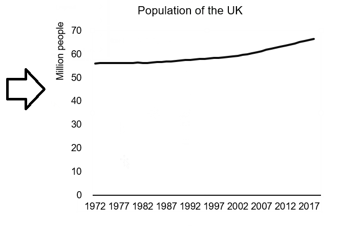
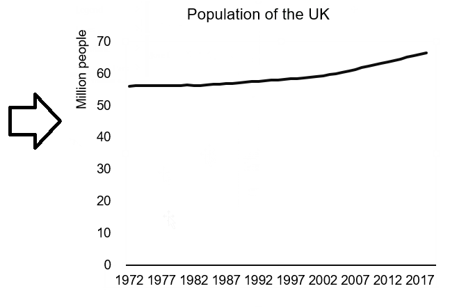
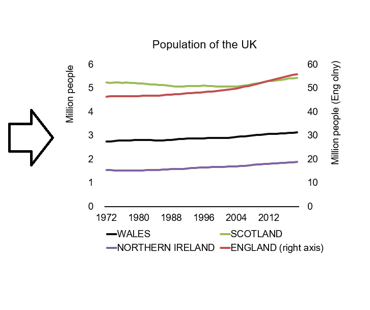
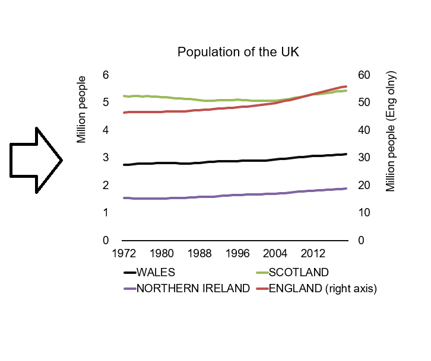
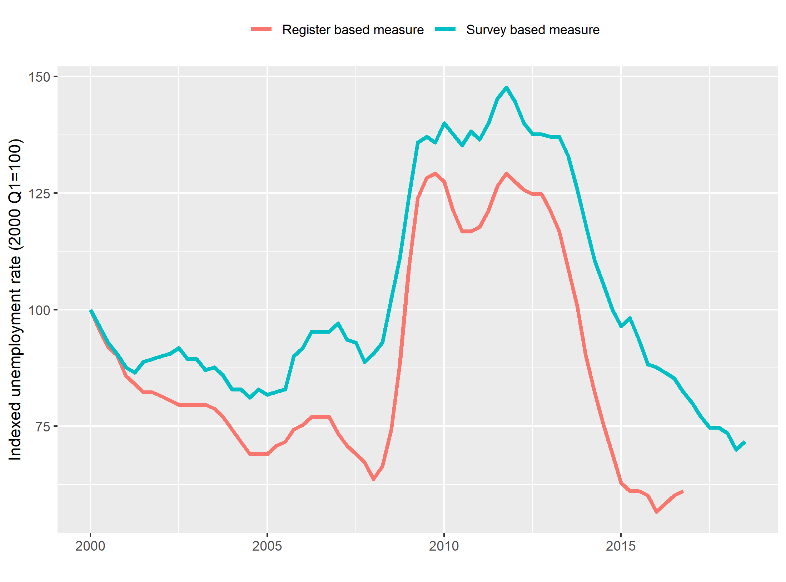
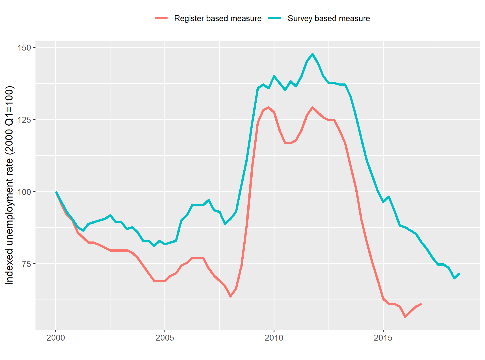
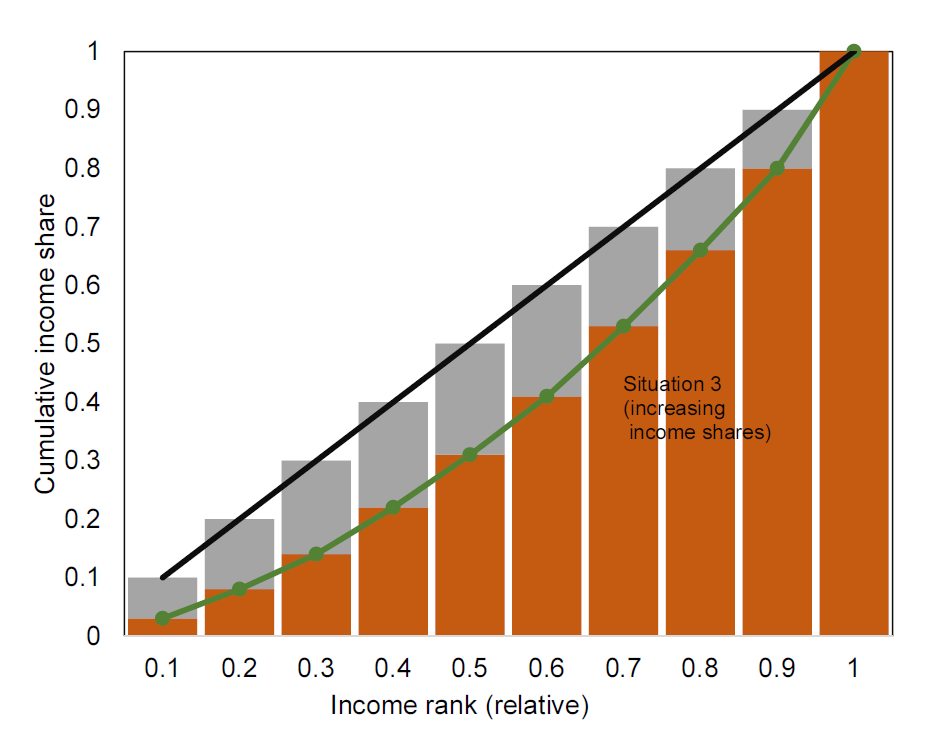
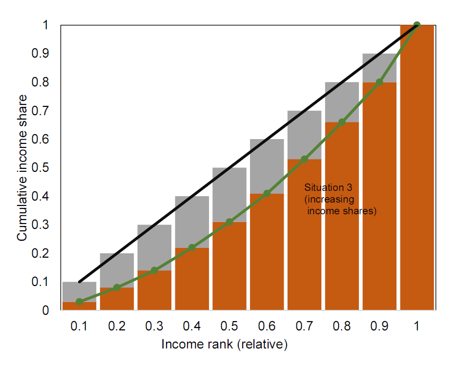

Economic Data
Version 0.3
Introduction
This online resource is for the unit Economic Data at the University of Bristol. After teaching the unit for two years based on technical manuals, lecture notes and extracts from several text books, I decided to combine all material in one “resource”, which is this “online book”. The goal is that this will make it simpler and easier for both students and teachers, as all material is collected at one place.
The book is divided into two parts. The first part contains nine chapters on economic concepts. In going through these concepts I also discuss visualization principles and describe how the charts and tables can be created using R or MS Excel. The second part contists of seven chapters with more details on the tools and principles behind the data visualization.
This book builds on a long list of books, articles and external references. These resources are referenced throughout, but it is worth mentioning a few of the most important resources:
- “The Economy” (The CORE Team 2017): mainly for descriptions on economic concepts.
- “Show me the numbers” (Few 2012): for detailed descriptions on chart and table design.
- “Fundamentals of Data Visualization” (Wilke 2019) and “Data visualization: a practical introduction” (Healy 2018): for detailed descriptions on how to create charts using R.
This project is work-in-progress and it will be updated continuously. I am grateful for all comments and suggestions. Please notify me of any errors you find in the book. You can either send me an email: h.h.sievertsen@bristol.ac.uk or use the github repository.
Part I: Econ Concepts and Definitions
Chapter 1 Data about people
1.1 What this chapter is about
1.1.1 Intended learning outcomes
This chapter is about showing data on people. For example the the number of people living in the United Kingdom on January 1, 2019. Population data is a good point of departure. Firstly, because data about people is some of the most important data in social sciences. Secondly, because data about people is quite straightforward and yet it involves a good range of basic concepts. After reading this chapter you should be able to
- Create data visualization on.
- Population stocks.
- Population flows.
- Population age compositions.
- Explain the difference between a flow and stock variable.
- Quantify changes in stocks and levels.
- This is covered in more detail in chapter X.
- Create an index with one variable.
- This is covered in more detail in chapter X.
- Create charts and tables and Excel.
- This is covered in more detail in chapter X.
1.1.2 Population data visualization examples
So let us look at some data on people. Figure 1.1 shows the population of the United Kingdom from 1960 to 2018 using a line chart. This chart is a bit dull. There are no bells and whistles such as 3D effects or colors. That is actually a good thing. Charts that should focus on the data and not distract the reader. We will discuss chart design in much more detail in later chapters. But for now, let us just focus on this boring chart. What can we use this chart for? We can clearly see that the population of the UK has been increasing over the last 50 years from less than 50 million in the 1960ies to more than 60 million around 2018. Can we say what the precise number of people in the UK is in 2018? Not really. A chart is rarely useful for looking up precise values. But a chart is really good at showing patterns in the data. For example the pattern that the population is increasing.
Figure 1.1: Population of the UK. Data Source: Eurostat
While the line chart above is a bit boring, Figure 1.2 is certainly not boring. It is very colourful and shows lots of data. This chart type is called a population pyramid chart. The chart shows the age composition of the global population. The width at the bottom of the chart represents the number of people in the youngest age group and the top the number of people in the oldest age group. Why do you think it is called a pyramid chart? And why do you think this version of the chart looks more like a cake? And finally, why is this trend both good and worrying for policy makers?

Figure 1.2: Global Population Age Composition. Source: Our World in Data
Data on the number of people are important in itself but are also important ingredients in many other economics statistics. We therefore need to know how population levels are defined, how me measure population levels and and how we visualize data on population levels.
Let’s get started.
1.2 Definitions on people
When we show and discuss data it is important that we agree on how we define the concept. We therefore begin by going through some definitions. Some of these definitions are not only limited to economic data. For example the definition on flow and stock variables, which we can use for any data type. Most of the definitions are fairly simple. That is actually the case for most definitions in this book. It is not the understanding of the definition that is challenging. The challenging part of working with economic data is knowing that there are definitions and that using a different definition can lead to a different conclusion about patterns in economic data.
1.2.1 Flow and stock variables
Variables either capture flows or stocks. We can illustrate flow and stock variables using a bathtub as in Figure 1.3. The water level in the bathtub at a given point in time is a stock variable. The amount of water that has flown into the tub over a period of time is a flow variable.
Figure 1.3: A bathtub with water illustrating flows and stocks
The easiest way to distinguish between flow and stock variables is that a flow variable is measured over a period of time while stock variable is measured at a specific point of time. If some asked you: “How much water flowed into the bathtub on September 4 at 4:40pm and 10 seconds?” It would be very difficult to answer. However, if someone asked “How much water was in the bathtub on September 4 at 4:40pm and 10 seconds?”, it would be quite easy to answer (given that you had some tool to measure). This is because the water level is a stock variable. A stock variable is measured at a point in time and “September 4, at 4:40pm and 10 seconds” is a point in time. On the other hand if someone asked “How much water flowed into the bathtub on September 4 between 4:40pm and 4:50pm?”, you would also be able to oanswer it, because you are now given a “period of time” (a period of 10 minutes) and flow variables are measured over a period.
-
A flow variable measures a flow of quantity over a period of time.
- For example the flow of migrants into the UK from January 1 2017 to December 31 2017.
-
A stock variable measures the level of quantity at a point of time.
- For example the number of people residing in the UK at January 1, 2018.
Let’s think about economic variables instead of water and bathtubs. What would be an example of stock and flow variables? An example of a stock variable would be wealth. We measure wealth at a “point in time”. An example of a flow variable would be income. We measure income over a period of time.
Why is it important to know whether a variable is a flow or stock variable? First, because it is useful when we want to understand the changes in a variable. The change in the water level of the bathtub (a stock variable) can be described by the inflow and outflow of water. The change in wealth (stock) is a function of income and consumption flows. Second, because the best way to visualize the data depends on the type of variable.
We can often describe the change in a stock variable by underlying flows:
\[ \Delta Stock=Stock_{1}-Stock_{0}=Flow_{0-1} \]
For example the change in the population level of the UK from 1 January, 2002 to 1 January, 2003 equals the number of people who immigrated to the UK, minus the number of people who left the UK (emmigrated), plus the number of children born, plus the number pof people who died in the period from 1 January, 2002 to 1 January 2003. In this example the population level is a stock variable. It is measured at a point in time (January 1, 2002). The other variables are all flow variables that are measured over a period of time. For example the number of births from 1 January 2002 to 1 January, 2003.
In the limit we would not be able to measure a flow variable as a stock variable. We could measure the number of people living in the UK on January 1, 2002 at five seconds and 3 milliseconds after 10:00AM, but how many children are born in exactly that millisecond? A child birth typically takes more than a second, so how do we allocate a birth a precise millisecond?
1.2.2 The population level
Let us now turn to a definition that we already discussed: The population.
- The number of people in an area at a specific point in time.
In most cases we are interested in the number of people of living in an area, but in some contexts it could be something else. For example the number of people working in an area. For example the number of people working in Bristol (I work in Bristol, but I do not reside in Bristol).
The area could be a planet, a continent a country, a region, a county, a municipality, a house or any other clearly defined space.
1.2.3 The population flows
The population level of an area can change because of non-zero net migration flows and non-zero natural reproduction flows. These two concepts are defined below:
- Immigration: the number of people entering an area over a period of time.
- Emigration: the number of people leaving an area over a period of time.
- Net migration: Immigration minus emigration
- Deaths: the number of people in an area who died within a period of time.
- Births: the number of people in an area who are born within a period of time.
- Natural reproduction: The number of minus births the number of deaths.
What do we mean with non-zero? If the net migration flow is zero it means that the number of people who left the area equals the number of people who entered the area. In that case the population is unchanged. Only if the number of people leaving the area is not equal to the number of people entering the area can population levels change because of migration flows.
1.3 Visualizing population data
Having sorted out the basic definitions on population levels and the underlying flows in terms of net migration, births and deaths, we can now turn to the visualization of the population data. But how do we select the appropriate visualisation mode? We can generally split the data visualization process into three purposes:
- Exploratory data visualization
- Analytical data visualization
- Data visualization for communication.
Let us say that we want to explore the data on the UK population. The first thing we might do is to download the data from the UK office for National Statistics and simply open it using the appropriate software such as MS Excel or R.
1.3.1 Exploring data on population levels
Let us first get some data from the website of the UK Office for National Statistics:

Figure 1.4: Getting data from the ONS website
Now that we have the data, we are ready to look at the data. Figure 1.5 shows the sheet called “MYE4” of the downloaded file. This sheet contains “Population estimates: Summary for the UK, mid-1971 to mid-2018”. That sounds about right.

Figure 1.5: UK population data opened in MS Excel
What do we learn from Figure 1.5? First of all, that there are many numbers. Secondly, it looks a bit like the population is increasing in all regions. But overall it is really hard to tell. This is because a table is good for showing exact values, but with a lot of exact values we lose the overview.

Figure 1.6: Creating our first chart in MS Excel
What can we learn from the chart created in 1.6? Not much. First of all, the chart indicates a decreasing trend. We typically read charts from left to right and almost all lines were decreasing. Secondly, it was very difficult to say anything about the population data for Wales, Scotland and Northern Ireland based on that chart, because the level is so low compared to England and the UK.
Let us solve the first problem first. Looking at the data again (see Figure 1.5 ), we observe that theONS puts the most recent value at the top. “Mid-2018” (i.e. the point in time the stock variable is measured) is the first value, followed by “Mid-2017” and so on. That is not how Excel works. When we create charts in Excel, Excel will assume that the first value is the oldest value and the last value the most recent value. This is even more important when the values don’t reflect dates that Excel might recognize. Excel will treat “Mid-2018” as any other name (just like “Hans”, “Julia” and “Jim”). And because we haven’t told Excel anything else, it will just assume that we want to show the first value first (furthest to the left) and the last value last (furthest to the right). That sounds reasonable, or? So we first need to reorder the data. We can do this using the “sort” function in R as illustrated in Figure 1.7.

Figure 1.7: Resorting the data
The new chart created in Figure 1.7 now shows the data in the right way. However, there is still the issue of the trends for the Northern Ireland, Wales and Scotland. Let us for now just concentrate on the UK and try to create a nice looking chart. In Figure 1.8 we create a chart that looks like 1.1. It is a bit dull, but it only shows what it should show. The population level of the UK and how it developed over time. As the animation in 1.8 shows, creating a nice looking chart requires a lot of small adjustments in Excel. We adjust text color, font size, font type, line color, line width, axis colors, axis labels, titles and many other things. Adjusting all these aspects can be a bit tiresome, but they are important. Figure 1.1 is created using the software R. When creating charts with R, we can write a “code” that instructs R on how to create the chart. This can save a lot of time. Especially because we can reuse the code. We will hear more about R, but let us first think about how we could include population data for England, Scotland, Northern Ireland and Wales in one chart.
 

Figure 1.8: Creating our first nice looking chart using Excel. Data source: ONS.
The key problem is that England’s population is a different level and that the y axis scale would be different if we only included Northern Ireland, Wales and Scotland and not England. What we can do is to create a second y axis. Let’s have a go in Figure 1.9.
 

Figure 1.9: Creating a chart of the population of the UK using Excel. Data source: ONS.
In the chart we create in Figure 1.9 the population level of England is shown on the right axis, while the levels for the other countries are shown on the left axis. When using this strategy, it is very important to clearly state what axis each line belongs to. In the example above this could be improved. How would you improve that chart?
So far we just used the line chart. The line chart is one of the most popular chart types. How does it work?
- The chart shows the relationship between two variables.
- The value of the first variable is reflected by the horizontal position.
- The value of the second variable is reflected by the vertical position.
- The values are connected along the horizontal axis suggesting that the variable is continuous.
Could we also use a different chart type to show the population of the UK? Yes, we could exploit that England, Nortern Ireland, Scotland and Wales are a part of a whole. Where the whole is the UK. We can use a stacked chart to show this. A stacked chart “stacks” the values on the vertical axis on top of each other. Stacking population levels for England, Wales, Northern Ireland and Scotland leads to the population of the UK. In Figure 1.10 we create a stacked area chart of the UK population. Now we do not need two axes. However, it is now much more difficult to identify the trends for the individual countries. This is a valuable lesson in data visualizations. We often have to sacrifice. We cannot show everything. We have to decide what the most important aspect of the data is.


Figure 1.10: Creating a stacked area chart for the UK population using Excel. Data source: ONS.
An area chart works very much likes a line chart, with one important difference:
- The value is not simply reflected by the vertical and horizontal position, but by the size of the area.
- We should therefore not truncate any of the axes (i.e. make the shorter), because that would remove parts of the area.
1.3.2 Showing relative changes
What if the most important aspect of the population data is the relative change since 1971? We can see the changes in Figure 1.9, but it is not easy to compare the relative changes for the individual countries. To highlight the relative change in population levels since 1971 and allow us to compare across countries we can create an index. For all countries we readjust the values in such a way that the value in 1971 is 100 using the following formula:
\[ I_{year}=100\times \frac{Population_{year}}{Population_{1971}}\]
We use this formula on the data from the examples above in Figure 1.11. From that chart we see that the population has increased the most in Northern Ireland and the least in Scotland, in relative terms. That was hard to see from the previous charts. However, now we cannot say anything about the levels anymore. This is because the level is “canceled out” in the index and only the relative changes remain.


Figure 1.11: Showing the relative population growth of the UK using an index in Excel. Data source: ONS.
1.3.3 Creating a table on population changes
Now what if we are only interested in the population level in 1971 and 2018 and how it changed. Could we show that in a different way that gives us access to more information? Yes, we could use a table because now it is only a few variables that needs to be shown. But designing a table also requires quite a bit of adjustment in Excel (or Word).
In Figure 1.12 we create a simple Table, but pay attention how we use black lines, borders, white space and text alignment to make the table as readable as possible.
- Solid black lines separate titles from main data and data levels from changes.
- As numbers have the same width we can align the numbers and the text in the center.
- We can now confirm the pattern from the index above, Northern Ireland experienced the largest growth in relative terms and Scotland the lowest.
- Compared to the charts above we have precise information about both the levels and the changes.


Figure 1.12: Showing the population of the UK using a Table. Data source: ONS.
1.3.4 Describing the change in levels by the underlying flow variables
We can investigate the underlying population flows to get a better understanding of the dynamics that led to the change in the population levels we observed. Consider the change in the population of the UK from January 1 2015 to January 1 2016. We can decompose the change in the population level (a stock variable) by the following four flows:
- The population on January 1 2015
- \(+\) moved to the country during 2015.
- \(-\) moved out of the country during 2015.
- =net migration
- \(+\) born the during 2015.
- \(-\)} died the during 2015.
- (=natural population change)
- \(=\) The population on January 1 2016.
The Eurostat database provides data on the underlying flows in the population levels. The question is: how to best visualize this change? In Figure 1.13 we show the flows by means of stacked bars and the stocks in terms of a line chart. We thereby exploit that the total change is equal to the natural population change plus the net migration. One challenge with the latter approach (stacking bars and areas) is that if a series can contain both negative and positive values, it might be hard to read or even slightly misleading, because the negative or positive value is hidden. However, the overall pattern is clearly visible. In recent years, the population of the UK ihas increased a lot, and this is both due to positive net migration flows and postive reproduction flows.
.](_resources/chapter_people/fig7.png)
Figure 1.13: Annual changes in the population of the United Kingdom in terms of net migration (immigration minus emigration) and the natural population change (births minus deaths). Data source: Eurostat. The R script for this Figure is available here.
1.3.5 Creating a pyramid chart using Excel
We have now shown the basic levels and flows, can we also create more advanced charts in Excel? For example a chart like 1.2?. The population pyramid chart. Yes. We can create a lot of charts using Excel. And a pyramid chart can be created with some creativity. Let’s first consider the various aspects of this chart
- The width of the chart shows the number of people in a specific age group.
- We split the chart by gender and show the number of men and women, respectively to the left and to the right.
- The vertical position reflects the age group.
We can create this chart in Excel by creating a a bar chart. A bar chart is very similar to an area chart, we show the value in terms of the size of an area. However, in contrast to both the area and line chart, the values are not connected. This is very useful when values are not continuous. This is not the case here, but it it is good to keep this in mind. Figure 1.14 shows how we can do it. Pay good attention to how we remove the minus.

Figure 1.14: Showing the population of the UK using a Table. Data source: ONS.
1.4 Summary
So what should you take away from this chapter?
- The difference between a stock and a flow variable
- Advantages of Tables vs. Charts
- How we measure the population level and migration and reproduction flows.
- Creating basic charts and tables in Excel
- Creating a pyramid chart in Excel
- Using and interpreting an Index with one variable.
Chapter 2 Data about economic activity
2.1 What this chapter is about
2.1.1 Intended learning outcomes
This chapter is about visualizing and describing data on economic activity. Economic activity is measured in the System of National Accounts (SNA) and conceptualized by the Gross Domestic Product, (GDP). We will not cover the SNA in detail.1 It is basically a set of rules and instructions that have been agreed internationally to ensure that measures of economic activity are comparable across countries. However, we will go through some of the key aggregegates of the SNA (for example GDP, Gross National Income, the GDP inflator etc.). An aggregate is a measure that aggregates several underlying variables. This chapter is mainly about the GDP, but we will also briefly touch upon other aggregates of the SNA as well as what the GDP is used for. After reading this chapter you should be able to:
- Explain what the gross domestic product (GDP) is and calculate it.
- Explain the three ways to measure GDP
- The Income Approach
- The Expenditure Approach
- The Output approach.
- Explain what The gross national income (GNI) is and calculate it.
- Calculate GDP per person and productivity.
- Visualize data on economic activity.
2.1.2 A brief history of GDP
I initially planned to commence this chapter with the history of GDP. That story would probably start around the Great Depression in the 1930ies US. The U.S. Congress realized that the economy was not running as well as it could, but had a hard time quantifying it. To the rescue came the economist Simon Kusnets who presented a report on the “National Income, 1929-1935” for the Congress (see 2.1), where he presented the idea of capturing the entire production, income and expenditure of the economy. And so the GDP was born. This story of how the GDP was created is probably the most well-known story of the GDP, but in reality the story of GDP is more complicated.
.](_resources/chapter_gdp/kusnetz.png)
Figure 2.1: Kusnets’ report for the U.S. Congress, 1934. Source: Fraser St. Louis FED.
The idea of quantifying the size of the economy probably goes back to at least the 17th century. The exact definition of GDP has since then been redefined and adjusted. It is actually continuesly adjusted. More on that later. Giving Simon Kusnets a lot of credit for the GDP is not completely wrong. He refined the concept a lot and his report made it prominent. However, it wasn’t until much later that it became the “statistic to rule them all”.
The GDP as a concept is critisized a lot. The most prominent critisism is probably the “Report by the Commission on the Measurement of Economic Performance and Social Progress” published in Autumn 2009 by the economists Joseph Stiglitz, Amartya Sen and Jean-Poul Fitoussi. What is the key critisism of GDP? The main problem with the GDP is not so much the GDP itself, but more the misuse of GDP as a measure of well-being or welfare. Simon Kusnets was actually already aware of some of these issues and the potential misue of GDP. Figure 2.1 shows a small section of the 273 page long report by Kusnetz.
Figure 2.2 shows extracts of pages 5-7 in Kusnets original report (Kusnets 1934). Kusnets made several points that are at the heat of the disucssion today, for example that “With quantitative measurements especially, the definiteness of the result suggests, often misleadingly, a precision and simplicity in the outlines of the object measured.” and “Economic welfare cannot be adequately measured unless the personal distribution of income is known. And no income measurement undertakes to estimate the reverse side of income, that is, the intensity and unpleasantness of effort going into the earning of income.”
.](_resources/chapter_gdp/kusnetz2.png)
Figure 2.2: Page 5-7 in ‘National Income, 1929–1932’. 73rd US Congress, 2d session, Senate document no. 124, 1934. Source: Fraser St. Louis FED.
So why should we care about GDP if it is no good? Actually it is a quite good of economic activity. But it is simply a measure of economic activity. We will return to the criticism of GDP in later chapters, but here we will discuss what it actually captures. When we know what the GDP measures, we can say more about what it doesn’t measure and how we should and should not use it. After reading this chapter, you should be able to
2.2 The Economy of Microcountry
Let me introduce a very small country. It is not my home country, Denmark, but a country that is even smaller: Microcountry. Microcountry is just next to Neighbourcountry. Microcountry is so small that I can explain all economic activity in this country to you.
In this country we have one farm that produces flour. The farm sells the flour to a bakery for 10 GBP. To produce the flour, the farm has workers, and these workers earn a wage of 8 GBP. Finally, the farm pays a tax to the government of 2 GBP.
The bakery produces bread based on labor inputs in terms workers and the flour bought from the farm. The workers at the bakery receive 14 GBP in wages, and the government receives 2 GBP in taxes from the bakery. The bakery sells bread for 18 GBP to the households in Microcountry. The households of Neighbourcountry buy bread from the bakery in Microcountry for 9 GBP, and the bakery in Microcountry is actually owned by residents of Neighbourcountry.
The households in Microcountry work for the bakery, the farm and for the government. They pay 1 GBP in taxes to the government, and buy bread for 18 GBP at the bakery. The households also import goods from Neighbourcountry for a value of in total 8 GBP. The government provides health service for the society of Microcountry and spends 5 GBP in wages to be able to supply this service.
Now the big questions are:
- The Gross Domestic Product (GDP) of Microcountry?
- The Gross National Income (GNI) of Microcountry?
To answer this we need to know what GDP is and how we can measure it.
2.3 What is GDP and how do we measure it?
The Gross Domestic Product captures the economic activity of an economy. What is economic activity? Just think of when you are economically active:
- When you go shopping and spend money.
- When you work and receive a wage income.
- When you create a product and sell it to someone.
These three examples of how we as individuals are economically active actually capture the three ways we measure the Gross Domestic Product. The expenditure approach, the income approach and the output approach. Let us now discuss these approaches in detail. The GDP captures how much is spend, how much is produced or how much is earned within a period. It is therefore a flow variable.
Below is a short animation of what the GDP is, created by the UK Treasury.
Figure 2.3: What is GDP?. Source: HM Treasury.
2.3.1 The Expenditure Approach
The expenditure approach (called the spending approach in (The CORE Team 2017)) measures the GDP in terms of expenditures by households and the Government, as well investments and net exports of goods and services (i.e. exports minus imports). All these expenditures are summarized in the following equation: \[\begin{align} \text{GDP}^{\text{E}} \text{=Y=C+G+I+X-M} \end{align}\] where:
- Y is the Gross Domestic Product (GDP).
- C is final consumption of goods and services by households. It includes goods like food, cars, and clothing, as well as services such as hotel stays.
- G is final consumption expenditure of goods and services by the government.
- I is investments (also called gross capital formation) are investments in fixed assets such as machinery, buildings etc.
- X is goods and services produced domestically but consumed abroad (Exports)
- M is goods and services produced abroad and consumed domestically (Imports).
Using data from the OECD, Figure 2.4 shows the size of each element of the expenditure approach for the United Kingdom over the period 2000 to 2015. In Figure 2.4 A, the development is shown in current prices. A change in the value from year to year is therefore a combination of a change in prices and a change in volume. We could have the extreme case, where we actually bought exactly the same quantity in all these years, but because the price increased, we would get the pattern shown in Figure 2.4. However, this is clearly not the case in the United Kingdom over this period. As Figure 2.4 B shows, the values also increased in real terms. In Figure 2.4 B we used the GDP deflator to adjust the values in current prices (shown in A) to the 2017 price level.

Figure 2.4: The expenditure approach components of the Gross Domestic Product for the United Kingdom using a stacked area chart. Imports enter negatively. Data source: OECD. Values are converted to the 2017 price level using the GDP deflator for each category.
The charts in Figure 2.4 are stacked area charts. As you might recall from the chapter on measuring people, area charts shows the size of the value by the size of the area and we are then putting each category on top of each other. This seems like a good solution with data on parts that constitute a whole, such as the population of the Wales, Northern Ireland, Scotland and UK, that constitute the population of the UK. Is it also a good idea to use this approach to show the expenditure parts of GDP like in Figure 2.4? Because the GDP by expenditure approach involves both negative and positive values, this does not work well Moreover, we are tempted to conclude that all categories increased in real (absolute) terms (i.e. in volumes) over the period 2000 to 2018. But for all categories, except the first one, it is very difficult to see, because the all changes in the first category will map over in the following category. Government consumption (G) has for example been steadily increasing over the period. There was no drop over the financial crisis. But this is very hard to see from Figure 2.4.
It is much easier to identify the changes in individual series by means of a simple line chart, as shown in Figure 2.5. From Figure 2.5 B we clearly see that Imports, Exports, Private Consumption and Investments suffered a drop in real values during the financial crisis, but Government Consumption did not. Both Figures 2.4 and 2.5 illustrate that Private Consumption (C) is the largest component of GDP in terms of the expenditure approach.
Figure 2.5: The expenditure approach components of the Gross Domestic Product for the United Kingdom using line charts. Data source: OECD. Values are converted to the 2017 price level using the GDP deflator for each category
Figure 2.6 shows a line chart of the relative change in each component of the expenditure approach by means of an index, where the base value is the value in the year 2000. This figure also highlights the importance of adjusting for price changes. In terms of nominal values (in other words in current prices), the values increased by up to more than 200 percent over the period (as Figure 2.6 A shows), but in real terms the change is much more modest (as Figure 2.6 B shows). The Figure also shows that the relative drop over the financial was remarkable in terms of the Investments (I).

Figure 2.6: The expenditure approach components of the Gross Domestic Product for the United Kingdom using line charts and an index with base year 2000. Data source: OECD. Values are converted to the 2017 price level using the GDP deflator for each category.
2.3.1.1 The income approach
A second approach to measuring GDP is the income approach. The income approach measures the GDP in terms of the generated income in the economy. The income generated in an economy consists of all compensation to workers (wages, pension contributions etc.), operating surplus (profits and rents) and mixed income (where mixed income is a mix of earnings and profits for self-employed) and taxes minus subsidies.2
\[\begin{align} \text{GDP}^{\text{I}} \text{=W+P+NT} \end{align}\] where
- W is worker compensation.
- P is operating surplus.
- NT is taxes minus subsidies.
Figure 2.7 shows the size of each of these three components for 2015 for the UK economy. Compensating of workers accounts for roughly half of the GDP, while operating surpluses account for about two-fifths. Note that the stacked area chart works better for the income approach compared to the expenditure approach, because all components are positive. The level of the top of the stacked area chart therefore corresponds to the actual GDP level.

Figure 2.7: The income approach components of the Gross Domestic Product for the United Kingdom using a stacked area chart. Data source: OECD. Values are converted to the 2017 price level using the overall GDP deflator.
Figure 2.8 shows the development of the wages (compensations of workers), profits (gross operation surplus) and taxes individually. The sharp decline in profits over the financial crisis is clearly visible. The growth in the wage component also flattened considerably over the financial crisis.

Figure 2.8: The income approach components of the Gross Domestic Product for the United Kingdom using line charts. Data source: OECD. Values are converted to the 2017 price level using the overall GDP deflator
Figure 2.9 again illustrates the difference between real and nominal comparisons. In nominal terms, the incomes increased by between 80 and 100 percent. In real terms it was “only” about 30 to 40 percent. The sharp drop ion profits over the financial crisis is also clearly shown, but this category also increased sharply shortly after.
Figure 2.9: The income approach components of the Gross Domestic Product for the United Kingdom using line charts and an index with base year 2000. Data source: OECD. Values are converted to the 2017 price level using the overall GDP deflator.
It is possible to decompose the income approach further. We can investigate both wages and profits by sector to identify the sectors that contribute the most to GDP, and also to identify the sectors that were mostly affected by a recession. However, one challenge with the income approach is that these values are often not available in real terms. In Figures 2.7 to 2.9 we adjusted the current values to real values using the overall GDP. This is generally not recommended, because sub-categories might experience quite different price changes than overall GDP. In this case the deflator for each element of the income approach is not available.
2.3.1.2 The production approach
The third and last approach to measuring GDP is the production approach (also known as the output approach). So far we have considered how much we’ve spend (the expenditure approach), the income generated (the income approach) and now we finally look at how much we produce. The production approach measures the GDP in terms of production or value added. The value added is the value of the output minus the costs of the intermediate goods. If a bakery buys flour for 15 GBP and sells bread for 50 GBP, the value added by the bakery is 50-15=35 GBP. Intermediate goods are all goods used in the production process, such as raw materials, fuel, rental costs, cleaning and marketing costs.
We typically distinguish between two types of outputs, market and non-market outputs. The market output are goods and services sold on the market, such as the bread sold by the bakery. In that case the value added is straightforward to calculate, as it is the sales price minus the price of the intermediate goods. However, not not all goods are necessarily sold, so we also include the change in inventories. For non-market output, such as health and defense, the output is the production costs, i.e. the cost of labor and intermediate goods (and depreciation in fixed assets). Finally, there is a distinction between value added in basic prices and value added in market prices. To obtain the latter we have to add sales tax and subtract subsidies.
\[\begin{align} \text{GDP}^{\text{P}} \text{=GVA+NT} \end{align}\] where
- GVA gross value added.
- NT is taxes minus subsidies.
It should be noted that NT in this case not necessarily equals NT in the income approach. This is because taxes and subsidies here only relate to the taxes and subsidies on goods produced domestically. In the income approach taxes and subsidies refer to the products produced domestically and the products that are imported. Figure 2.10 the development of these components by sectors of the UK economy. As all aspects contribute positively to the overall GDP, we can interpret the height of the stacked area chart as the overall GDP level.3

Figure 2.10: The production approach components of the Gross Domestic Product for the United Kingdom using a stacked area chart. Data source: OECD. Values are converted to the 2017 price level using the GDP deflator for each category.
The stacked area chart is appealing, but it is hard to get a sense of the individual values. Again, the line chart (shown in Figure 2.11) is a lot more informative about the individual levels.
Figure 2.11: The production approach components of the Gross Domestic Product for the United Kingdom using line charts. Data source: OECD. Values are converted to the 2017 price level using the GDP deflator for each category.
The index line chart in Figure 2.12 shows that some sectors are still below their 2000 level in real value added terms (for example the sector “Industry, including energy”).

Figure 2.12: The production approach components of the Gross Domestic Product for the United Kingdom using line charts and an index with base year 2000. Data source: OECD. Values are converted to the 2017 price level using the GDP deflator for each category
2.3.2 What is included in the GDP measure?
Measuring GDP also requires us to understand which activities we should include, and which we should not include. Based on the general principles described in the (The European Commission - Eurostat 2013), the Office for National Statistics decides on an production boundary, which contains all economic activities that should be included in the GDP measurements. An activity is included in the boundaries if:
- The activity produces a meaningful output.
- The product or activity has a meaningful market value, or the market value can be imputed.
- The inclusion of the activity increases the meaningfulness of cross-country comparisons.
Several activities are less clear-cut that you might think, for example activities where “production is forbidden by law; as long as all units involved in the transaction enter into it voluntarily” are included. Breeding of fish in fish farms is included, but breeding of fish in open seas is not included.
2.3.3 GDP - Why 3 approaches?
Note how all three approaches shown result in the same GDP. For simplicity, one might therefore argue that we should just stick to one approach and ignore the two other approaches. However, each approach has its own advantage. First, expenditure approach is very useful if you want to assess whether changes in GDP are driven by for example domestic consumption or exports. Moreover, we can decompose all approaches in more detail. We could for example identify which sector is contributing most to the value added using the production approach.
As noted, the three approaches to measuring GDP should all lead to the same overall GDP. As an illustration, Table 2.13 shows the GDP components for each of the three approaches for the United Kingdom in 2017. While the three approaches in theory should lead to exactly the same number, we often observe small discrepancies in practice. These discrepancies are called “statistical discrepancy” and area as Table 2.13 shows relatively small. The table also illustrates why the three approaches are useful: they are informative about different perspectives. We could ask, was the recession mainly related to a drop in private consumption or exports (based on the expenditure approach)? Or, was the recession mainly related to a drop in profits or compensation of employees (the income approach). Or, which sector’s production dropped most during the recession?

Figure 2.13: Gross Domestic Product of the United Kingdom in 2017.Data source: OECD. All values are in 2017 prices.
1. The expenditure approach
- The expenditure approach (called the spending approach in (The CORE Team 2017)) measures the GDP in terms of expenditures by households and the Government, as well investments and net exports of goods and services (i.e. exports minus imports).
\[\begin{align} Y=C+G+I+X-M \end{align}\]
- Y is the Gross Domestic Product (GDP).
- C is final consumption of goods and services by households. It includes goods like food, cars, and clothing, as well as services such as hotel stays.
- G is final consumption expenditure of goods and services by the government.
- I is investments (also called gross capital formation) are investments in fixed assets such as machinery, buildings etc.
- X is goods and services produced domestically but consumed abroad (Exports)
- M is goods and services produced abroad and consumed domestically (Imports).
2. The income approach
- The income approach measures the GDP in terms of the generated income in the economy.
\[\begin{align} Y=W+P+NT \end{align}\]
- W is worker compensation.
- P is operating surplus.
- NT is taxes minus subsidies.
3. The production approach (also known as the output approach)
- The production approach measures the GDP in terms of production or gross value added.
\[\begin{align} Y=GVA+NT \end{align}\]
- GVA gross value added.
- NT is taxes minus subsidies.
2.4 Gross National Income (GNI)
Gross national income (GNI) is the income received by residents of the domestic economy. The GNI is thus defined as the GDP plus the net property income from abroad. Where property income consists of interests, rent on land and income from corporations. The GDP and GNI can be very different. If for example most firms in the economy have foreign owners, the profits of these firms will be subtracted from the GDP, and the GNI will thus be considerably lower.
2.5 What we use GDP for.
Now what do we need these measures for? The GDP is an important aspect in many policy makers evaluation of the condition of the economy. For example, during the Great Depression in the late 1920ies and early 1930ies the economy looked quite bad, but how bad was actually hard to describe. The United States congress therefore asked the economist Simon Kuznetz to quantify US economic activity. Kuznetz estimates gave the first insights in the magnitude of the Great Depression by showing the change in economic activity during the great depression. Let us just consider a few general uses of GDP.
2.5.1 Growth rates
As it was the case of the great depression, we are in general typically more interested in changes than in levels of GDP. A very commonly shown statistic is therefore the annual change in GDP. To get from the level of GDP to the growth rates is straightforward, given that the levels are measured in real terms, that is at a constant price level (we will return to the issue of real and nominal terms in later chapters).
Figure 2.14 shows the GDP of the UK using a fixed price level and the annual growth rates. The yearly growth rates roughly correspond to the first derivative of the level, as they show the changes. Therefore, we are actually able to identify the large dip in 2009 even in the levels shown in the graphs above. However, identifying whether growth rates are 2 or 3 percent is difficult based on the levels, and bar charts of growth rates are therefore a very common way to visualize the economic conditions.

Figure 2.14: Annual GDP growth rates for the UK, 2000-2018. Using a bar chart. Source: OECD. The GDP level is measured in terms of the 2017 price level.
2.5.2 Business cycles
Once we know the changes in economic activity, we can start characterizing periods by terms such as business cycles, booms, overheating and recessions. The actual definitions of these concepts are considerably less clear. The US National Bureau of Economic Research has a “Business Cycle Dating Committee” that specifies the chronology of the US business cycles. The committee does not have a fixed definition of recessions Instead the combine real GDP, with data on the labour market and data on income. However, their definitions of recessions often coincide with a definition based on two consecutive quarters of decline in real GDP.
How exactly expansions and recessions are identified varies from country to country, but in the European Union we typically define a recession as two successive quarters of negative economic growth. A business cycle is typically defined as the period from a boom to recession and back to boom, in other words, from peak to peak. Figure 2.13 shows annual levels, and we clearly see a drop in real output in 2008 and 2009. In terms of quarters, the growth rate was negative from the second quarter in 2008 to the second quarter in 2009.
- An economic recession is the period from peak economic activity to the lowest level of economic activity.
- An economic expansion is the period from the lowest level of economic activity to the highest level of economic activity.
- The economic cycle of recessions and expansions is called business cycles.
- There is no general stringent definition of a recession, but two consecutive quarters of decline in real GDP is often seen as a sign of of a recession.
2.5.3 GDP per capita
While GDP growth rates are used across time, we are sometimes also interested in comparing across regions or countries. First, we could be interested in identifying regional recessions and expansions. Second, we could be interested in comparing the level of economic activity per capita. To achieve the latter, we divide data on total GDP for each region or country and divide by the number of residents in the region or country. Figure 2.15 shows the economic activity per person in 2015. We have adjusted the price levels to be comparable across time and space. In this chart the values correspond to the price level of 2017 and we have adjusted all national values to the US price level and show the values in US dollars. To be clear, we do not simply use the exchange rate to translate the national currencies, but we also take differences in price levels across countries into account. Luxembourg has, by far, the highest level of economic activity per person, followed by Ireland and Switzerland. Of the OECD data with available data, Chile has the lowest GDP per person.
Figure 2.15: GDP per capita for selected countries in 2015, measured in 2017 USD - PPP adjusted. Source: OECD. The R script for the GDP per capita Figures is available here.
Figure 2.16 shows the relative change in real economic activity per person from 2000 to 2015. Most countries increased the output per person, but not all.
.](_resources/chapter_gdp/fig12.png)
Figure 2.16: Real change in GDP per capita for selected countries 2000-2015, real values measured in 2017 USD - PPP adjusted. Source: OECD. The R script for the GDP per capita Figures is available here.
2.5.4 Productivity
Productivity is a measure of how much we can produce relative to the resources used in the production. A higher productivity means that we produce more given resources (or produce the same with less resources).
A very common approach is to measure the Gross Value Added per worker or per hours worked. A higher value then suggests that we can produce a greater value added with less labor inputs. However, we could also consider other inputs such as capital. However, the most simple approach is probably GDP per worker. This is closely related to GDP capita, which we discussed above, but in this approach we only consider the individuals who are on the labor market. Using this approach we can provide a crude but straightforward indicator for the labor productivity of a country. Changes in productivity are often the first step in understanding changes in economic activity.
2.5.5 The balance of trade
The balance of trade is the difference between exports and imports, also called net exports and denoted \(NX\):
\[\begin{align} NX=X-M \end{align}\]
- NX is the balance of trade or net exports.
- X is goods and services produced domestically but consumed abroad (Exports)
- M is goods and services produced abroad and consumed domestically (Imports).
If the balance of trade is positive it means that a country has a trade surplus, because it exports more than it imports. If a country imports more than it exports, in other words, when the trade balance is negative, the country has a trade deficit.
2.5.6 Balance of payments
The balance of payments (BoP) captures the overall transactions between a country and the rest of the world. According to the BoP the the sum of the current account, financial account and capital account has to be zero.
- The current account consists of the the balance of trade (as defined above) and the income balance (income earned abroad from domestic residents minus income earned by foreign residents).
- The capital account captures international capital transfers.
- The balancing item captures statistical inaccuracies.
\[\begin{align} \text{current account}+\text{capital account}+\text{balancing item}=0 \end{align}\]
Let’s consider an example: If we go to Germany on holiday and spend 10GBP in restaurants and hotels using our English credit card, we are causing a 10GBP debit on the trade balance. Let’s say that we also export some English Breakfast tea for the value of 100GBP to Germany. This is noted as a 100GBP credit on the trade balance. The balance of trade is then \(100GBP-10GBP=+90GBP\). We don’t earn anything abroad and no foreigner earned something in England. The current account would then be \(+90GBP\).
Now let us look at the capital account. The 10GBP spent abroad using our English credit card will be recorded as a credit in our capital account as an investments. If we also buy some German stocks for say 15GBP, then these stocks will appear in debit as “portfolio investment”. However, because we use our English credit card to buy these stocks, the 15GBP will also appear on our capital account as a credit (just like the hotel and restaurant shopping). Finally, the trade credit payment from the German tea buyer is recorded in the financial accounts as a debit. The net capital account is then \(25GBP-115GBP=-90GBP\). As expected, the sum of the current account plus the capital account is zero. This occurs by definition through the double entry accounting framework (each entry is entered both as a debit or a credit).
It is common to separate out “financial account” from the capital account and use this extended definition: \[\begin{align} \text{current account}+\text{capital account}+\text{financial account}+\text{balancing item}=0 \end{align}\]
2.6 Summary
So what should you take away from this chapter?
- What GDP and GNI are.
- How GDP and GNI are measured.
- The difference between real and nominal GDP.
- How to calculate growth rates.
- Identifying business cycles.
- GDP per capita and productivity measures
- Balance of Trade and Payments.
Chapter 3 Measuring Well-Being
3.1 What this chapter is about
3.1.1 Intended learning outcomes
We will now follow up on some of the issues on measuring well-being raised in the last chapter. In the last chapter we learned how GDP is a measure of economic activity and how it is (mis)used as a measure of well-being. In this chapter we discuss the problems with using GDP as a well-being measure, what well-being is, and how we can measure it. After reading this chapter you should be able to:
- Explain the problems of using GDP as a well-being measure.
- Explain and identify subjective and objective measures of well-being.
- Use publicly available measures of well-being and explain how they are created and relate to each other.
- Use scatter plots and understand how we can combine several variables in one measure.
3.2 What is well-being?
One of the reason for why the GDP is so popular is that it has a more or less globally accepted standard way of quantifying economic activity. Very few variables are as standardized as GDP (although there are some variation in what is included in the GDP measure). We use GDP because the GDP is available and because the GDP is comparable across countries and regions. Not even definition of unemployment rate is as standardized as the measure of GDP. But we now know what the GDP captures and what should use it for and what we shouldn’t use it for. It is a measure of economic activity, not a measure of well-being. But what is well-being? What is welfare?
The first challenge is to agree on what we want to measure and what we want to call it. Is it well-being, happiness, welfare or quality of life. The “Stiglitz report” (Stiglitz et al. 2009) (discussed below) uses the term “Quality of Life” and state the following:
"While a long tradition of philosophical thought has addressed the issues of what gives life its quality, recent advances in research have led to measures that are both new and credible. This research suggests that the need to move beyond measures of economic resources is not limited to developing countries (the traditional focus of much work on human development in the past) but is even more salient for rich industrialised countries. These measures, while not replacing conventional economic indicators, provide an opportunity to enrich policy discussions and to inform people’s view of the conditions of the communities where they live. More importantly, the new measures now have the potential to move from research to standard statistical practice. While some of them reflect structural conditions that are relatively invariant over time but that differ systematically across countries, others are more responsive to policies and more suitable for monitoring changes over shorter periods of time. Both types of indicator play an important role in evaluating quality of life.
(page 41 in Stiglitz et al. 2009)
We will go through the three conceptual approaches discussed in the Stiglitz report below and later present some measured of quality of life and well-being in practice and how they relate to the conceptual approaches.
3.3 GDP and well-being
3.3.1 The Stiglitz Report
One important milestone in the debate on measuring well-being and quality of life is the so called “Stiglitz Report” (Stiglitz et al. 2009), named after one of the authors, professor Joseph E. Stiglitz. The official title of the report is “Report by the Commission on the Measurement of Economic Performance and Social Progress”. The goal of the commission behind the report was
“to identify the limits of GDP as an indicator of economic performance and social progress, including the problems with its measurement; to consider what additional information might be required for the production of more relevant indicators of social progress; to assess the feasibility of alternative measurement tools, and to discuss how to present the statistical information in an appropriate way.”
page 7 in (Stiglitz et al. 2009).
The report provides detailed examples and criticism of GDP as a measure of well-being and social progress as well, as discussed, conceptual approaches to measure well-being. We will first briefly discuss some of the most prominent criticism of GDP as a measure of well-being and then return to how we could do a better job.
3.3.2 Criticism of GDP as a well-being measure
GDP is a poor measure of human welfare
The first criticism is probably the most-known critique: GDP measures consumption of goods and services (the expenditure approach), and while these aspects might be correlated with quality of life, there are many aspects of utility and well-being that are not captured by GDP. To list a few:
- Nature and environment (pollution)
- Education
- Health
- Crime and safety
Consider two countries that have an identical GDP per capita. In the first country there is almost no pollution, there are beautiful mountains, forests, lakes and beaches. In the second country there is lots of pollution and no access to nature. Moreover, in the first country life expectancy is high and the population have very few health problems. In the second country life expectancy is low and the mental and physical health of the population is very low.
Would you say that well-being is the same in the two countries (they have the same GDP per capita)? Probably not. And GDP per capita does not capture all these elements listed above (and many elements we did not list).
Many studies find that GDP per capita is correlated with the dimensions above. For example that higher GDP capita is associated with lower infant mortality rates. But this is not the case for all dimensions, and the question is whether it is sufficient that GDP is correlated with these aspects.
GDP ignores the distribution
Again, consider two countries with identical GDP per capita. In the first country, some have a bit more resources than others, but very few are poor and very few are extremely rich. In the second country all inhabitants are poor, with the exception of one extremely rich person. Is the well-being the same these two countries?
In practice we often observe GDP growth rates that affect the population unevenly. The well-educated population may benefit more from growth driven by advanced innovation than unskilled workers. The GDP per capita measure does not capture these distributional effects. Recall from the last chapter that Kusnets already mentioned the issue of not accounting for the distribution of income (page 6 in Kusnets 1934).
Well-being is not monotonically increasing
Does GDP growth always make people happier? And is the effect constant? Promoting GDP growth appears to be an endless goal, but in practice, the effect of more GDP on well-being might non-linear and even non-monotonic. Going from starvation to having enough food and decent living conditions might affect well-being more than the same monetary increase for people who already have very high living standards. Moreover, there might be some certain level of saturation, after which more GDP does not lead to increases in well-being.
Some evidence suggests that after a certain level resources, people care mostly about their relative position. This is phenomena called “keeping up with the Joneses”, where we envy those who have more than us, and enjoy looking at those who have less than us. In such a case, a uniform increase in income for all of us has no effect on the well-being.
3.4 How to measure well-being & quality of life
The commission the Stiglitz report identified the following the conceptual approaches to measuring quality of life:
Subjective well-being
The key idea is that we simply ask people about their well-being and happiness with the idea that: “that enabling people to be happy and satisfied with their life is a universal goal of human existence.” from page 7 in (Stiglitz et al. 2009)
Subjective well-being measures are often divided into the following three types:
Evaluative measures In this approach we ask respondents to evaluate their life satisfaction, their health, or in general their well-being. We can anchor these questions (“relative to the best possible state” or relative to some objective state.).
Experience measures
In this approach we ask respondents about their feelings or experiences at specific points during the day (or during the week).
Eudemonic measures
This approach focuses on psychological aspects of individual well-being and relates to the individual’s position and control over their life.
There are several standardized questionnaires to capture the measures above and many of them show consistent patterns:
“Research has shown that it is possible to collect meaningful and reliable data on subjective well-being. Subjective well-being encompasses different aspects (cognitive evaluations of one’s life, positive emotions such as joy and pride, and negative emotions such as pain and worry): each of them should be measured separately to derive a more comprehensive appreciation of people’s lives. Quantitative measures of these subjective aspects hold the promise of delivering not just a good measure of quality of life per se, but also a better understanding of its determinants, reaching beyond people’s income and material conditions.”
Figure 3.1: Ask people how they feel
page 58 in (Stiglitz et al. 2009)
Capabilities
The second conceptual approach to measuring well-being is to measure individuals ability to pursue and realise the goals that they value (the capabilities).
Fair allocations
The third conceptual approach to measuring well-being is to measure the allocation of resources among people with different tastes and abilities.
3.4.0.1 Objective well-being measures
While subjective well-being typically is measured through questionnaires where we directly ask people about their their well-being, the capabilities and fair allocations approaches typically rely on “objective measures”. However, these approaches should not be considered as “more objective” compared to the subjective measures. For example the choice of indicators to include depend on a normative judgement.
“The information relevant to valuing quality of life goes beyond people’s self-reports and perceptions to include measures of their functionings and freedoms. While the precise list of these features inevitably rests on value judgements, there is a consensus that quality of life depends on people’s health and education, their everyday activities (which include the right to a decent job and housing), their participation in the political process, the social and natural environment in which they live, and the factors shaping their personal and economic security. Measuring all these features requires both objective and subjective data. The challenge in all these fields is to improve upon what has already been achieved, to identify gaps in available information, and to invest in statistical capacity in areas (such as time-use) where available indicators remain deficient.”
page 58 in (Stiglitz et al. 2009)
3.5 Measuring well-being in practice
Let us now discuss approaches to measuring well-being in practice and how they relate to the approaches discussed above.
3.5.1 Quick guide: Combining several variables
How can we create a well-being measure that combines measures of subjective well-being, measures of health, education, environment, crime in one statistic?
When working with topics such as global development or well-being, we are often interested in aggregating several variables to obtain one variable. Many of the strategies to achieve this are beyond the scope of this unit, but you should be aware of these methods.
Creating an index
Well-being measures such as the Human Development are s based on aggregating three individual indices by means of the geometric mean.
\[\begin{align} HDI=(LEI\times EI\times II)^{1/3} \end{align}\]
Where \(LEI\) is the life expectancy index, \(EI\) is the education index, and \(II\) is the income index. Each of these indices are measured on a scale from 0 to 1, where the raw variables are related to some “max” value. For example for life expectancy, the maximum is 85 (i.e. an index value of 1) and the minimum is 20 (i.e. an index value of 0). A standard formula of measuring the individual index is as follows:
\begin{align}
I=\frac{Y-Y_{MIN}}{Y_{MAX}-Y_{MIN}}.
\end{align}
Principal Component Analysis and Factor Analysis
Principal component analysis (PCA) and Factor analysis are methods to reduce the dimensionality of data. These approaches are very often used in regressions, when you want to reduce the number of variables. With these method you can identify a set of or that describe the variation in the data. The goal is typically to identify a set of components and factors that are smaller than the number of variables used.
Intuitively speaking, the goal is to identify variables that “move in the same direction”. Imagine that you have a dataset with 25 behavioural measures of a child. Five of these measures relate to the child’s peer relations. When one of these variables go up, the other four also tend to go up. Another five variables might capture the child’s level of hyperactivity and inattention, again, if one of the five variables goes up, the other four also tend to go up. We have those identified two separate components, that each cover five underlying variables.
Factor analysis and principal component analysis are two distinct methods. Factor analysis is more based on theories of underlying latent (unobserved) variables, while principal component analysis is more based the objective to reduce the number of dimensions (number of variables) in the data.
3.5.2 The Human Development Index (UN)
The Human Development Index (HDI) is developed by the United Nations Development Programme (UNDP). The index is an example of combining several objective indicators of well-being in one measure. The index consists of the three dimensions:
- Life expectancy index
- Education index
- Income index.
the HDI is created by the geometric mean of the the three indices above. There ahas been some changes in the HDI definition over time. Data is available for the period 1995-2015 for many countries across the world. The data can be downloaded from the website of the United Nations: UN.
3.5.3 World Happiness Report
Published by the United Nations since 2012, the World Happiness Report uses data from the Gallup World Poll to describe global happiness patterns, by linking these data to specific topics (for example migration). The data is available for download here: World Happiness Report.
3.5.4 OECD Better Life Index
The OECD has computed the “Better Life Index” since 2013. The index is a combination of subjective and objective indicators that captures 11 dimensions of well-being: housing, income, jobs, community, education, environment, civic engagement, health, life satisfaction, safety and work-life balance. The data is available both as a total, by subgroups (men and women) and by distribution (low vs. high). The data can be downloaded from the OECD website: OECD.
3.5.5 ONS Measuring National Well-being
The UK office for National Statistics collects data on well-being measures. These data are a combination of subjective and objective indicators and capture personal well-being, relationships, health, what we do, where we life, personal finance, the economy, education and skills, governance, and the natural environment. The data is available both on aggregated level, and also on a regional level from the ONS website: ONS.
3.5.6 Quality of life indicators
Eurostat publishes various statistics related to quality of life. They have identified nine indicators to capture quality of life. These aspects are also a mix of subjective and objective indicators. A description of their approach and links to data is available here: eurostat.
3.6 Why is the GDP used anyway?
Why is GDP so important in policy making despite the criticism above? First of all, as disucssed above. GDP has the advantage of being available and being standardized. Secondly, it is correlated with many of the well-being measures discussed above. In Figure 3.2 we combine data on GDP per capita and the quality of life measures from Eurostat. What do you think of relationship? Do you recognize any of the criticism of GDP as a well-being measure?
Figure 3.2: Figure 1: GDP per capita and subjective well-being in 2013. Source: Eurostat
To assess the relationship between the two variables, GDP per capita and Subjective Well-Being we used a scatter plot. A scatter plot is like an unconnected line chart where the vertical and horisontal positions represent the values of respectively the variables on the vertical (y) axis and horisontal axis (x). Scatter plots are very powerful tools to show relationships between variables, especially when we have a lot of data.
3.7 Summary
In this chapter we covered the following topics:
- What are the problems of using GDP as a well-being measure.
- What is the “Stiglitz report”
- How can measure well-being in practice?
- What well-being measures exist?
- How can we combine several variables into one variable?
- What can we use scatter plots for?
Chapter 4 Life and Death
4.1 What this chapter is about
In earlier chapters we’ve discussed how Gross Domestic Product measures economic activity, and how other measures should be included to give a comprehensive measure of quality of life. Many of the available well-being measures use “life expectancy” as an (objective) indicator of health conditions. We should therefore be able to calculate life expectancy and explain the assumptions under which it is created. Moreover, fertility behavior is clearly linked to well-being. Fertility measures are rarely used directly in indexes, but they are nevertheless important for social scientists. First of all, there might be a link between between economic conditions, social conditions and fertility behavior. Could you come up with an explanation why? (You will be asked to do this in the exercises). Secondly, fertility behavior (and life expectancy) affects the age composition of the population, which is directly relevant for public policies. After reading this chapter you should be able to:
- Use standard measures of fertility
- The Age-Specific Fertility Rate
- The Total Fertility Rate
- The General Fertility Rate
- The Crude Birth Rate
- Create life tables
- Calculate life expectancy
4.2 Describing fertility trends
Now we know that the population increase of the United Kingdom is both due to positive net migration flows and positive reproduction flows. We can go one step deeper and assess the changes in births in the United Kingdom. To investigate this we can make use of some of the standard definitions for describing fertility in a population:
Age Specific Fertility Rate (ASFR)
The number of live births per woman in a specific age group.
\[\begin{align} ASFR_a=\frac{\text{Number of births to women in age group} a}{\text{Number of women in age group} a} \end{align}\]
Total Fertility Rate (TFR):
The number of children born per woman if she were to pass through the childbearing years (typically set to: 15-44y or 15-49y) bearing children according to a current age-specific fertility rates.
\[\begin{align} TFR=\sum_{a=15}^{44}ASFR_a \end{align}\]
General Fertility Rate (GFR)
All live births per woman in the childbearing ages (also typically per 1000 women).
\[\begin{align} GFR=\frac{\text{Number of births }}{\text{Number of women in childbearing age} } \end{align}\]
Crude Birth Rate (CBR)
All live births per 1000 population of all ages \[\begin{align} CBR=\frac{\text{Number of births }}{\text{Population size} } \end{align}\]
4.2.1 Data requirements
In order to be able to calculate the fertility rates described above we need data on: (1) the number of live births by the age of the mother, (2) the number of women by age, (3) number of people in the population. Merging these data from Eurostat we can create Figure 4.1), which shows the development in the number of live and still births. Note that we again show two series with different scales in the same Figure using two different vertical axes. Why did we combine these two graphs, and why do they have very different scales?
4.2.2 Relating the fertility measures to each other
Why do we have different fertility measures and what do they say? When thinking about fertility in layman terms, we typically think about the number of children a woman will have in her life. It is an easily understandable hypothetical measure of completed fertility, which is captured by the Total Fertility Rate (TFR). It is hypothetical because we sum the age-specific fertility measures across ages at a given point in time. Any woman in this sample will of course only be included in one of the age specific fertility rates and contribute to that value. We impute the total fertility rate by summing over a lot of different age groups, who will be at different ages in different points in time.
The General Fertility Rate (GFR) on the other hand gives information about the number of new children relative to the number of women in childbearing ages. It is therefore an actual (and not a hypothetical) number. This is a refinement over the crude birth rate by taking into account the share of women in the population. To sum up, we should use the Total Fertility Rate to describe the fertility (behavior) and General Fertility Rate to describe the “number of individuals” added to the society. How does the General Fertility Rate relate to the Total Fertility Rate?
From GFR to TFR: A General Fertility Rate of about 60 (like at the end of the period in Figure 4.1) shows that 1000 women had 60 children in that year. Or that 1 woman on average had 0.06 children on average this year. But this of course only considers one year. In our calculations we used the age group 15 to 45 (although 15 to 49 is also common), which means that we considered 31 years of a woman’s life. We can therefore multiply the 0.06 by 31 to get 1.83 which would be the average number of children a woman would have if all years were like this year. However, the TFR at the end of the period shown in Figure 4.1 was 1.73. Why do these number differ? There are two reasons: Firstly, the number of woman in each age group differs. Secondly, the fertility rates differ by age. If one of these aspects is constant, the Total Fertility Rate will be the same as the General Fertility rate.
- TFR & GFR are the same when:
- The number of women in each age group is constant.
- The ASFRs are the same.
.](_resources/chapter_death/fig10.png)
Figure 4.1: Fertility rates for the United Kingdom. Data source: Eurostat. Note: Only births of women aged 15-45 are included. The R script for this Figure is available here.
What is the chart telling us? So why did we combine the two line charts in Figure 4.1? Firstly, the goal was to investigate the link between these two series. The graph is scaled in a way such that the Total Fertility Rate should perfectly overlay the General Fertility Rate if they are the same (that is the level on the right vertical axis is equal to 31 times the corresponding value on the left axis). This is clearly not the case, but we see that the gap narrowed in the early 2000s. This will be the case if the age groups with higher age specific fertility rates are larger. If every age group has the same fertility rate this year and next year, but the number of people in an age group with a relatively high age specific fertility rate is larger next year compared to this year, the General Fertility Rate will increase, but the Total Fertility Rate will be unchanged.
4.2.3 Decomposing the development in life births
Life births are a good example for a situation where we can use the simple decomposition methods described in lecture note 4 (we already did that). We can use the General Fertility Rate and describe the development in the number of life births holding either the number of woman constant or the General Fertility Rate constant.
4.3 Life expectancy
Having discussed one element of natural population change, births, we now turn to the other aspect: deaths. We will here briefly summarize the construction of life tables and estimation of life expectancy. Life tables provide a list of period live expectancies for given age groups. Given you are in a specific age group today and given the mortality rates of each age group, what is your expected life expectancy. The alternative measure, the cohort life expectancy, takes variation in mortality rates across cohorts into account. We will here only cover the period life expectancy and how to construct a life table.
| Col | Notation | Content | Source |
|---|---|---|---|
| (1) | \(x,x+n\) | The age interval | Provided |
| (2) | \(m_x\) | The age-specific death rate. | $ rac{ ext{deaths \(x,x+n\) }}{ ext{population \(x,x+n\) }}$ |
| (3) | \(_nq_n\) | Prob. dying within interval. | \(\frac{2 imes n imes m_x}{2+n imes m_x}\) |
| (4) | \(I_x\) | Alive at age \(x\) | \(I_0=100,000\) |
| \(I_{x+n}=I_x-_nd_x\) | |||
| (5) | \(_nd_x\) | Number of people who die within interval. | $I_x imes _nq_x $ |
| (6) | \(L_x\) | Person-years of life in interval | \(\frac{I_{x}+I_{x+n}}{2}\) |
| (7) | \(T_x\) | Cumulative person-years of life | \(\sum_{end}^x{L_x}\) |
| (8) | \(e_x\) | Average years of life remaining at age \(x\) | \(T_x/I_x\) |
Table 4.1 shows the data requirements for creating life tables. For each age group we require data on the number of people in that group and the number of people who died in that group. Once we have these two variables we can construct the other variables. The first variable we construct is the age specific death rate, following by the probability of dying within the age group interval. We then construct a synthetic population that has a size of 100,000 individuals at the beginning of the first period. In each period we calculate the number of people who survive to this period and who die within this period. We can then use these estimates to calculate the number of life years lived in this period, and sum over these live years. At the end, we divide the number of life years left in any given period by the number of people getting to this period to obtain the estimated life expectancy.
| age | mx | nqx | ndx | Ix | Lx | Tx | ex |
|---|---|---|---|---|---|---|---|
| 0 | 0.004 | 0.004 | 385.000 | 100,000 | 99,808 | 8,081,572 | 80.816 |
| 1 | 0.000 | 0.000 | 25.376 | 99,615 | 99,602 | 7,981,765 | 80.126 |
| 2 | 0.000 | 0.000 | 14.013 | 99,589 | 99,582 | 7,882,163 | 79.147 |
| 3 | 0.000 | 0.000 | 11.453 | 99,574 | 99,568 | 7,782,581 | 78.159 |
| $ dots$ | |||||||
| 98 | 0.346 | 0.295 | 980.052 | 3326 | 2836 | 3128 | 0.941 |
| 99 | 0.386 | 0.324 | 758.769 | 2345 | 293 | 293 | 0.125 |
Table 4.2 shows a subset of a life table for the United Kingdom using data from Eurostat and the recipe outlined in Table 4.1. Figure ?? shows a graph of the live expectancy (the last column of Table 4.1) and survival rate for the United Kingdom based on data from Eurostat.
](_resources/chapter_death/fig11.png)
](_resources/chapter_death/fig12.png)
Figure 4.2: Life expectancy by age (left) and survival probabilities (right). Data source: Eurostat. The R script for this Figure is available here
4.4 Summary
So what should you take away from this chapter?
- Measures of fertility
- The Age-Specific Fertility Rate
- The Total Fertility Rate
- The General Fertility Rate
- The Crude Birth Rate
- Creating life tables
- Calculating life expectancy
Chapter 5 Prices
5.1 What this chapter is about
In lecture 13 we discussed how the Policy Interest Rate is set by the Bank of England. The Bank of England has one objective in mind when deciding on the interest rate, the inflation in the UK should be 2 percent. So if you had spend 100 GBP to buy a basket of goods last year, you should spend 102 GBP to buy the basket of goods this year, that gives you the same utility. If the price of the basket is now less than 101 or more than 103 the Bank of England is required to explain why. In other words, the Bank of England faces an inflation target of 2 percent, and deviations of more than one percentage point requires a public explanation. Now this all sounds simple and straightforward. However, the question is what baskets of goods should we compare? Should the basket this year contain exactly the same goods as the basket last year, in the same quantity and quality? What if a new product arrives on the market? We will discuss these issues in this lecture along with the concept of the Purchasing Power Parity, which concerns the comparison of prices across countries.
After this lecture you should be able to
- Explain the difference between the Laspeyre and Paasche price index.
- Explain how the consumer price index is constructed.
- Explain what inflation is and how it is measured.
- Explain what Purchasing Power Parity is, and how we can use it to compare prices across countries.
5.2 Price indexes - in theory
5.2.1 The objective
Before we discuss how we measure changes in prices, let’s briefly discuss what our objective is. There are many different price indexes, such as the consumer price index, the producer price index, the house price index and the GDP deflator. They all track the development of prices, but they focus on the prices of slightly different goods. The consumer price index, which is the index central banks typically use in the inflation target, measures the development of prices over time. We would like to know, as a consumer, how much more expensive (in nominal terms) is it today compared to yesterday. But what comparison should we make? There are many goods and prices, and we need to combine their development in one overall number. We therefore compare the price of a basket of good over time. And what determines the composition of this basket? A fair comparison would be to compare two baskets that gives us the same utility. Unfortunately we do not observe people’s utility, and it is therefore not possible to make this comparison in practice. The price indexes discussed in the next section are therefore concerned in how we in practice can crate this basket of goods.
5.2.2 A simple index
Let us first revisit the index concept we used in the first week. We constructed indexes separately for each variable. In other words, for each variable, there is one index:
\[\begin{align} I_t=100\times \frac{P_t}{P_0} \label{eq1} \end{align}\]
Where \(I_t\) is the index value of price \(P\) at time \(t\), using time \(t=0\) as the base year. Note that we also have that: \[\begin{align} I_{t-1}=100\times \frac{P_{t-1}}{P_0} \label{eq2} \end{align}\]
which we can rewrite to:
\[\begin{align} Y_0=100\times \frac{P_{t-1}}{I_{t-1}} \label{eq3} \end{align}\]
And then insert in equation :
\[\begin{align} I_t&=100\times \frac{P_t}{100\times \frac{P_{t-1}}{I_{t-1}}}\nonumber\\ \Rightarrow I_t&=I_{t-1}\times \frac{P_t}{ P_{t-1}}\nonumber\\ \label{eq4} \end{align}\]
Instead of computing the index based on base year, we take the index value last period and multiply by the change in our variable from last year to this year. Table 5.1 shows a simple example of two indexes based on two time series.
| Year | P1 | I(P1) | P2A | I(P2) |
|---|---|---|---|---|
| 2001 | 136 | 100 | 120 | 100 |
| 2002 | 186 | 137 | 127 | 106 |
| 2003 | 197 | 145 | 140 | 117 |
| 2004 | 204 | 150 | 138 | 115 |
| 2005 | 215 | 158 | 150 | 125 |
| 2006 | 222 | 163 | 160 | 133 |
But what if \(P1\) is the price of coffee and \(P2\) is the price of tea, and we would like to summarize the price development in one index variable? One approach would simply be to take the average across these two products:
\[\begin{align} I_t&=100\times \left(\frac{0.5\times P1_t+0.5\times P2_t}{0.5\times P1_0+0.5\times P2_0}\right) \label{eq5} \end{align}\]
Which gives us the index shown in Table 5.2 . The new single index value is always between the two separate index values in Table 5.1, because the new index is based on the simple mean across these two variables.
| Year | P1 | P2 | PA | I(PA) |
|---|---|---|---|---|
| 2001 | 136 | 100 | 128.0 | 100 |
| 2002 | 186 | 137 | 156.5 | 122 |
| 2003 | 197 | 145 | 168.5 | 132 |
| 2004 | 204 | 150 | 171.0 | 134 |
| 2005 | 215 | 158 | 182.5 | 143 |
| 2006 | 222 | 163 | 191.0 | 149 |
But what if we drink much more coffee than tea (I am not British)? Let’s say that for every four cups we drink, three of them are coffee and one of them is tea. Now this should also be reflected in our price index. The simple arithmetic mean is therefore not representative, instead we should use the weighted mean, where we assign tea a weight that is three times higher than coffee:
\[\begin{align} I_t&=100\times \left(\frac{0.75\times P1_t+0.25\times P2_t}{0.75\times P1_0+0.25\times P2_0}\right) \label{eq6} \end{align}\]
or expressed in more general terms:
\[\begin{align} I_t&=100\times \left(\frac{Q1 \times P1_t+Q2 \times P2_t}{Q1 \times P1_0+Q2 \times P2_0}\right) \label{eq7} \end{align}\]
Where \(Q\) refers to the quantities or weights.
Table 5.3 shows the weighted price index, along with the weights, \(Q\). The overall price of our hot drinks consumption now increased 56 percent from 2001 to 2006, this is slightly higher than the price index in Table 5.2, reflecting that the price of coffee has increased more than tea, and we consume relatively more coffee.
| Year | P1 | P2 | Q1 | Q2 |
|---|---|---|---|---|
| 2001 | 136 | 100 | 75 | 25 |
| 2002 | 186 | 137 | 75 | 25 |
| 2003 | 197 | 145 | 75 | 25 |
| 2004 | 204 | 150 | 75 | 25 |
| 2005 | 215 | 158 | 75 | 25 |
| 2006 | 222 | 163 | 75 | 25 |
Computing a price index has been quite straightforward so far. However, in the later years we started to drink relatively more tea, so the weights changed. This is where we introduce slightly more complex price indexes.
5.2.3 The Laspeyre Index
The German economist and Etienne Laspeyre is the father of the Laspeyere index. In terms of our two goods world, with only tea and coffee, Laspeyre’s index is defined as:
\[\begin{align} I_t^L&=100\times \left(\frac{Q1_0 \times P1_t+Q2_0 \times P2_t}{Q1_0 \times P1_0+Q2_0 \times P2_0}\right) \label{eq8} \end{align}\]
What is new compared to equation is that not only do the prices have time periods, but also the weights (the quantities), \(Q\). Using Laspeyre’s index, the weights are kept constant at the initial period, 0. In other words, Laspeyre’s index tells us how much the price of our consumption has increased, given the relative weights in the base year. In more general terms (with more goods), we can write Laspeyre’s index as follows:
\[\begin{align} I_t^L&=100\times \left(\frac{\sum^I_{i=1} Qi_0 \times Pi_t}{\sum^I_{i=1}Qi_0 \times Pi_0}\right) \label{eq9} \end{align}\]
Where \(i\) refers to the product. So in the case of the Laspeyre price index, our movement away from tea to coffee is ignored. If we wanted to adjust the weights, an alternative methodology is provided by Paasche.
5.2.4 The Paasche Price Index
As with the Laspeyre index, the Paasche index is attributable to a German economist, this time it is Hermann Paasche. The Paasche index is very much just the opposite of the Laspeyre index. We use the current weights, both in the denominator and numerator.
\[\begin{align} I_t^P&=100\times \left(\frac{\sum^I_{i=1} Qi_t \times Pi_t}{\sum^I_{i=1}Qi_t \times Pi_0}\right) \label{eq10} \end{align}\]
Instead of always comparing the sample basket we bought in the reference period, we refer to the basket, in the current period. Table 5.4 shows the Laspeyre index (\(I^L\)) and the Paasche index (\(I^P\)) for our two good case, where the quantities or weights change from year to year. Unsurprisingly, the Laspeyre index corresponds to the weighted average in Table 5.3, because the weight in the base year corresponds to the constant weights in Table 5.3 . The Paasche index is, however, slightly different. Going back to Table 5.1 we recall that the price of the first good (say coffee) increased more than the price of the second good (say tea). Now as we start consuming relatively more tea, the good that increases less in price receives more weight. The Laspeyre index ignores this, but the Paasche does not, and therefore the Paasche price index is lower than the Laspeyre index.
| Year | P1 | P2 | Q1 | Q2 |
|---|---|---|---|---|
| 2001 | 136 | 100 | 75 | 25 |
| 2002 | 186 | 137 | 65 | 35 |
| 2003 | 197 | 145 | 55 | 45 |
| 2004 | 204 | 150 | 45 | 55 |
| 2005 | 215 | 158 | 35 | 65 |
| 2006 | 222 | 163 | 25 | 75 |
Our example is actually in line with what we typically observe in the real world, the Laspeyre index gives a higher increase than the Paasche index. This is because consumers tend to substitute away from the good that increases relatively more in price. So when one good’s price increases less than the other, and we therefore tend to consumer more of the relatively cheaper good, the Paasche index takes this into account because weights are updated every year. The Laspeyre index on the other hand always refers to the base year weights. Which index to prefer is, however, not obvious. Often the choice of index will be based on practical reasons. While the Paasche index requires new weights every year, the Laspeyre index only requires the base year weights and the prices for all periods. The Paasche index is therefore slightly more data demanding.
5.2.5 The Fisher Price Index
The Fisher index, introduced by the american economist Irving Fisher, is a compromise between the Laspeyre index and the Paasche index. It is also called Fisher ideal index, and it is based on an average between the Laspeyre and Paasche index. The average is computed by means of a geometric mean:
\[\begin{align} I_t^F&=\sqrt{I^ L_t\times I^ P_t} \label{eq11} \end{align}\]
Table 5.5 includes the Fisher ideal index. As we would expect (given that the mean), the the Fisher ideal index is always between the Laspeyre and the Paasche index.
| Year | P1 | P2 | Q1 | Q2 |
|---|---|---|---|---|
| 2001 | 136 | 100 | 75 | 25 |
| 2002 | 186 | 137 | 65 | 35 |
| 2003 | 197 | 145 | 55 | 45 |
| 2004 | 204 | 150 | 45 | 55 |
| 2005 | 215 | 158 | 35 | 65 |
| 2006 | 222 | 163 | 25 | 75 |
5.2.6 The Lowe Price Index
The Lowe price index is attributed to the Scottish economist Joseph Lowe. The Lowe index is a more general price index, where the reference period for the weights is not set.
\[\begin{align} I_t^{Lo}&=100\times \left(\frac{\sum^I_{i=1} Qi_r \times Pi_t}{\sum^I_{i=1}Qi_r \times Pi_0}\right) \label{eq12} \end{align}\]
The Laspeyre price index is a special case of the Lowe price index, where \(r=0\), and the Paasche price index is a special case of the the Lowe price index, where \(r=t\). The Laspeyre and the Paasche indexes are therefore often called “Lowe type price indexes”.
5.2.7 Other indexes
There are many different price indexes, and the price indexes applied by statistical offices will often be modified versions of the standard formulas. One modification is chain-linking, which we will discuss in the next section. However, before we get there, it is worth mentioning a few more price indexes. The Finnish statistician Leo Törnqvist introduced an index (the Törnqvist index), where we instead of taking the mean between the Fisher and Paasche index, take the mean of the weights between the base year and the current year. However, the Törnqvist index also differs by using a weighted geometric mean instead of the weighted arithmetic mean.
Also, another index worth mentioning is the Carli index, introduced by the Italian economist Gian Carli:
\[\begin{align} I_t^{C}&=\frac{1}{N}\sum^I_{i=1}\left(\frac{Pi_t}{Pi_0}\right) \label{eq13} \end{align}\]
Note that the Carli index is unweighed. It is therefore called elementary, and it is typically only used when we are focusing on specific product types.
5.2.8 Chain-linked vs. unchained indexes
So far we’ve three solutions regarding product weights. One, we use the weights in the base year (Laspeyre); two, we use the weights in the current year (Paasche); three we use an average between the base year and the current year (Fisher/Tornqvist). An alternative strategy is to constantly update the base year of the weights. This is where the alternative specification in equation becomes handy. Recall that the we could write the price index in year \(t\) as the price index in year \(t-1\) times the change from year \(t-1\) to \(t\). In general terms, as a chain-linked Laspeyere index, this works as follows:
\[\begin{align} I_t^{CL}&=I_{t-1}\times \left(\frac{\sum^I_{i=1} Qi_{t-1} \times Pi_t}{\sum^I_{i=1}Qi_{t-1} \times Pi_{t-1}}\right) \end{align}\]
We call this methodology for chained, because we link each year using a chain of updated weights. We thus use the standard Laspeyre index, but every year we update the base year as the last year. We can do a similar exercise with the Paasche index
\[\begin{align} I_t^{CP}&=I_{t-1}\times \left(\frac{\sum^I_{i=1} Qi_{t} \times Pi_t}{\sum^I_{i=1}Qi_{t} \times Pi_{t-1}}\right) \end{align}\]
| Year | P1 | P2 | Q1 | Q2 |
|---|---|---|---|---|
| 2001 | 136 | 100 | 75 | 25 |
| 2002 | 186 | 137 | 65 | 35 |
| 2003 | 197 | 145 | 55 | 45 |
| 2004 | 204 | 150 | 45 | 55 |
| 2005 | 215 | 158 | 35 | 65 |
| 2006 | 222 | 163 | 25 | 75 |
5.2.9 Summary on price indexes
Objective
- A method to compare the price development across a large bundle of goods.
Challenge
- The composition of the bundle might change over time, and some goods might gain higher and lower weight, while other goods might be removed or added to the bundle.
Method
- The Laspeyre index: Keep the bundle fixed in the base year and assess the price development based on the development of the costs of the initial bundle.
- The Paasche index: Update the bundle every year, and compare the price of the new bundle given current prices and given prices in the base year.
- The Fisher index: The geometric mean of the Laspeyre and the Paasche indexes.
- Chain-linking: Continuously update the reference period.
5.2.10 Weigths
Before we turn to the actual price indexes, we will briefly discuss how these weights are computed, \(Q1\) and \(Q2\). These weights could be obtained by various sources. In practice, most countries compute the weights based on total household final expenditure from the national accounts.
However, some indexes use surveys to compute the weights. For the UK, the Living Costs and Food Survey is based on reported consumption over a two week period for thousands of households. This survey is used in some price indexes constructed by the ONS (for example the RPI). One advantage of using surveys to compute weights is that we have more information on the household, and we can thus rely on households that we believe are more representative.
5.3 Price indexes - in practice
There is not only one price index. We might for example be interest in how costs for firms have developed. The typical consumption basket for firms is very likely to be different than the typical basket for households.
5.3.1 Consumer Price Indexes
Let us first consider how the price level for consumers develops. The ONS publishes several consumer price indexes. Let us consider three of the most important ones:
- The Consumer Price Index (CPI)
- The Consumer Prices Index including owner occupiers’ housing costs (CPIH)
- The Retail Prices Index (RPI)
The CPI is calculated in line with European regulations, but the RPI does not satisfy the international standard. The latter is therefore not regarded as a National Statistic of the ONS any more, but it is still produced, because contracts still rely on the RPI. The main difference between the CPI and the CPIH is that the CPIH includes costs related to owning a home, such as maintenance (owner occupiers’ housing costs). The CPI and CPIH include the same items, except for the housing costs. The RPI differs somewhat to the CPI and CPIH in terms of items included. While the weights in the CPI and CPIH are based on total household final expenditure from the national accounts, the weights in the RPI are based on the Living Costs and Food Survey. The CPI is based on about 180,000 prices that cover about 700 items.
The CPI and CPIH are chain-linked Laspeyres-type price indexes computed on a monthly basis. The RPI is (approximately) also a chain-linked Laspeyre type index, but based on annual data.
Looking beyond the UK, the harmonised index of consumer prices (HICP), is the consumer price index by the European Union/ Eurostat, which is also a chain-linked Laspeyres-type price index. Both the CPI and CPIH use weights that are typically updated annually. For more details on the consumer price indexes, see (Office for National Statistics 2014) for the ONS and (Eurostat 2018) for the European level.
There are various data sources for price indexes. Figure 5.1 uses data from Eurostat to show the development in the price index for the UK and for the EURO area as a whole. Note that the index is based on 2015 as a reference year. This is slightly unusual, as we often prefer to have the first period as a reference.

Figure 5.1: The Consumer Price Index (HICP) for the EURO countries and the UK. Source: Eurostat. Notes: The index is constructed such that the 2015 average is 100.
5.3.2 Producer Price Index, Import Price Index and Export Price Index
Firms typically have different weights than consumers. We typically distinguish between three indexes, the Producer Price Index (PPI), the Import Price Index (IPI) and Export Price Index (EPI). These indexes are all chain-linked Laspeyres-type price index, where weights are updated regularly, but typically less frequent than for consumer price indexes. The weights are constructed using sales data from different sources. For more details see (Office for National Statistics 2018) for the ONS and (Eurostat 2012) for the European level.
5.3.3 Other indexes
A couple of additional indexes also deserve mentioning. First, the GDP deflator. The GDP deflator is considerably broader than the other price indexes, as it covers the complete domestic economy. The National Accounts typically also use chain-linked Laspeyres type approach to be able to make monetary levels comparable across periods. For more details see (Office for National Statistics 2016). Second, the House Price Index (HPI), again a chain-linked Laspeyre type index, with annual updating of weights. This index covers housing bought by households, such as flats, detached houses and terraced houses. Third, the Index of Private Housing Rental Prices (IPHRP) capturing the development in the price tenants face when renting residential housing.
5.4 Comparing monetary values across time
5.4.1 Inflation
As there are many price indexes, there are also many inflation measures. The Bank of England’s inflation target relates to the Consumer Price Index inflation. The ONS publishes both annual and monthly rates, where annual rates relate to the change in prices over a 12 month period, and monthly to a month to month change. As inflation shows the change in price levels, the inflation can be seen as the first derivative of the price index. In Figure 5.2 we show the year-to-year change in price levels based on the price indexes shown in Figure ??.

Figure 5.2: Consumer Price Inflation for the EURO countries and the UK. {Source: Eurostat. Notes: The inflation relates to 12 month changes.}
Note that the UK inflation is currently considerably higher than the inflation in the EURO area.
5.4.2 Real vs. nominal values
Price indexes are not only used to compute inflation measures. More than 100 years ago, in 1905, the English footballer Alf Common moved from Sunderland to Middlesbrough for a record fee of 1,000 GBP. In terms of today’s transfer fees, this sounds unrealistic. But based on the amount you could purchase with 1,000 GBP in 1905, this corresponds to about 114,367 GBP in 2017, which is still low, but seems more reasonable. To make this adjustment, we use price indexes.
Using price indexes we can compare the fee of Alf Common to the fee of for example Kevin Keegan in 1977, when he moved from Liverpool to Hamburg for a fee of 500,000 GBP. The 500,000 GBP in 1977 corresponds to about 2,922,031 GBP in 2017. We can thus refer to the 1,000 GBP and 500,000 GBP as transfer fees in nominal terms and the 114,367 GBP and 2,922,031 GBP as real terms in the 2017 price level.
Nominal values are monetary values that are expressed in current prices. For example your monthly income measured in the price level used today or the transfer fee in 1905 measured in the price level of that time.
Real values are monetary values, where we adjust for changes in price levels. To figure out whether you earn more today than 10 years ago, it is not sufficient just to compare the nominal earnings today and ten years ago, as the price level has changed. As goods and services have become more expensive, the same earnings as 10 years ago, in nominal terms, would enable you to buy less today than ten years ago. Adjusting the earnings to the same price level using inflation or price indexes is necessary to understand whether we are facing a real increase.
To convert the nominal values to real values (say the value in the base year) we multiply the nominal values with the change in the price index:
\[\begin{align} P_{BASE}=P_t\times \frac{CPI_{BASE} }{CPI_t} \end{align}\]
5.4.3 The real interest rate
In lecture 13 we discussed interest rates. An annual interest rate of 2 percent means that if I place 100 GBP in that investment, I will receive 102 GBP in one year. But what if the price index also increases from 100 to 102? In real terms I am not richer in a year than I am now, because the same bundle of goods that I am able to buy for 100 GBP today, costs 102 GBP in one year. If we want to know whether we will actually get richer from an investment, we should consider the real interest rate. Now let us consider how much richer we are in a year. We want to know the real interest rate \(r\), and we know the nominal interest rate \(i\) and the inflation rate \(\pi\) (it is fairly standard to use these letters for interest rates and inflation). We can thus write
\[\begin{align} 1+r= \frac{(1+i)}{(1+\pi)} \end{align}\]
which we can rewrite as:
\[\begin{align} 1+\pi+r+r\times \pi&= 1+i\nonumber\\ \Rightarrow r&= i-\pi-r\times \pi \end{align}\]
As inflation and the interest rates typically are fairly small, the term “\(r\times \pi\)” will be close to zero. We can therefore compute the approximate real interest rate as:
\[\begin{align} r\approx i-\pi \end{align}\]
which is also known as the . When inflation exceeds the real interest rate, we face a negative real interest rate.
5.4.4 The Phillips Curve
The Phillips curve was introduced by William Phillips an economist from New Zealand. He studied the relationship between inflation and unemployment, a relationship that is visualized in the Phillips Curve. The original Phillips is a scatter plot of wage inflation and unemployment in the UK. The curve showed that periods with low unemployment rates also tended to be periods with high inflation rates, and periods with high unemployment rates also tend to be periods with low inflation. The (short-run) intuition behind this relationship is that when employment is high, the pressure on wages is high, and wage inflation is high. For details on the Phillips curve, see (p. 646 in The CORE Team 2017) .
In 2008 Gregor (Smith 2008) published a paper, where he showed how the Phillips of Japan looks like Japan. His plot is shown in Figure 5.3, along with a picture from Google maps, of Japan. What do you think? Is this advanced chartjunk?


Figure 5.3: The Phillips curve of Japan and a map of Japan. Source: The Map is from Google Maps, the Phillips curve is from citet{smith2008japan}. The unemployment rate is multiplied by minus 1.
5.5 Comparing monetary values across regions
5.5.1 The Big Mac index
Considering price levels is not only important when we compare changes over time, but also across countries. In lecture 3 we discussed exchange rates, but sometimes it is not sufficient to just apply the exchange rate. Imagine that you would like to compare the earnings of a typical worker in Ukraine to the earnings of a typical worker in Switzerland. But prices in Ukraine are very different to prices in Switzerland, and just comparing the earnings using the exchange rates would not reflect the differences in living standards. One illustration of the difference is the Big Mac Index, which has been published by the Economist since 1986. According to the 2017 version of the index, a Big Mac costs around 6.35 USD in Switzerland and 1.54 USD in Ukraine. The price level, as approximated with the Big Mac Index is therefore about four times higher in Switzerland compared to Ukraine. If the Big Mac price level is reflective of the overall costs, it would suggest that to obtain the same living standards in Switzerland as in Ukraine, you need about four times the income Switzerland compared to Ukraine.
Several indexes have been produced to mimic the idea of the Big Mac Index (the IPod index, the Starbucks Latte index, etc.). However, these indexes have some obvious short-comings. The product is not the same across countries and the product is not representative of the overall costs.
5.5.2 Purchasing Power Parity
While the Big Mac Index provides a very simple approach to compare prices. A more rigorous way to compare nominal values across countries is by means of purchasing power parity (PPP). As a point of departure, let us consider the price of a Big Mac. In Switzerland the price is approximately 6.50 CHF and in the US the price is approximately 5.06 USD. This would suggest an exchange rate between US and Switzerland of:
\[\begin{align} PPP_{BigMac,SUIUS}=\frac{6.50}{5.06}=1.28 \end{align}\]
now, according to the law of one price, we would expect the price of a big mac to be the same in the US and in Switzerland, so the difference must be the exchange rate. Having 5.06 USD must thus be the same as having 6.5 Swiss Francs, or having 1 USD must correspond to 1.28 Swiss Franc. However, at the time of the Big Mac price difference (January 2017), the USD to the CHF exchange rate was 1.01. According to the Big Mac index, the Swiss Franc was overvalued by about 30 percent compared to the USD. So to make the monetary values comparable across Switzerland and the US we multiply all US values with 1.28 instead of the actual exchange rate. We say that the purchasing power parity is 1.28 CHF to 1 USD.
Just like a basket of goods is used to compare prices across time, a representative basket of goods is used to compare prices across countries. The OECD and Eurostat cooperate in the measuring of the PPP. Details on how to compute the PPP can be found in (OECD & Eurostat 2012). We use PPP to compare GDP (and especially GDP per capita) across countries. Which we will work on in lecture 15
5.6 Summary
In this lecture we’ve covered the following topics:
- The objective of price indexes.
- Indexes in theory: The Paasche and Laspeyre price indexes.
- Indexes in practice: The Consumer Price index and friends.
- The use of price indexes: computing inflation rates and converting nominal values to real values.
- The Phillips curve.
- Comparing prices across countries using the Purchasing Power Parity.
Chapter 6 Money
6.1 What this chapter is about
If you ask a bank to lend you money, they will probably charge you an interest rate. The interest rate is the price of money. This chapter is about the different types of interest rates, and the price of money in other currencies, the exchange rates. After this chapter
- Distinguish between the policy interest rate, the interbank rate, and the bank lending rate.
- To express the price of currencies in terms of exchange rates and describe movements in exchange rates.
6.2 Interest rates
6.2.1 The basics: What is the interest rate?
If you ask a friend whether you can borrow 2 GBP today, it is likely, that you have repaid your debt once you’ve repaid these 2 GBP. However, if you ask your bank whether you can borrow 10,000 GBP, it is likely that they will require you to repay more than 10,000 GBP. If the bank asks you to repay 10,500 GBP, the bank charged you an interest of 5 percent rate. Or in other words, the interest rate, \(i\), on your bank loan is 5 percent:
\[\begin{align} i=\frac{\text{amount to repay}}{\text{amount borrowed}}-1=\frac{10,500}{10,000}-1=0.05 \end{align}\]
Why did you have to pay more to the bank than you borrowed? To be able to lend 10,000 GBP to you, the bank has to get 10,000 GBP from somewhere. Banks borrow and lend money on the money market where they also pay an interest rate for lending money. Alternatively the bank could lend the money from another customer, but this other customer would expect to get something in return, an interest.
Why would the other costumer expect an interest? The short answer: Money today is costly. Would I rather have 100 GBP today or 100 GBP in two years? If you take 100 GBP today you could just keep the money in a safe place for two years. So money today should be at least as much worth today as in two years (everything else equal). Moreover over two years things might get more expensive. The amount of goods you can buy today for 100 GBP is probably larger than the amount of goods you can buy in two years because of the inflation. Moreover, you could also keep the 100 GBP today and invest them in stocks or bonds, and you might have more than 100 GBP in two years. So in sum, money today is typically more worth than money at a later point in time, and you have to pay a price for for that, the interest rate.
Why are interest rates important in economics? Imagine that you have a business idea, and that you need some funding, say 10,000 GBP. You go to your bank and ask for 10,000 GBP today. They might answer, sure just promise to give us 10,050 GBP in ten years. That is an interest rate of 0.5 percent (\(=100*((10,500/10,000)-1)\)). Not a bad deal, and you might be inclined to accept it and start your own business. But imagine that the bank says, sure, just promise to give us 20,000 GBP in ten years. That is an interest rate of 100 percent (\(=100*((20,000/10,000)-1)\)). Unless you have no other (cheaper) options to borrow money and you are very certain of your business idea, you will be probably reject this offer and not initiate your business idea. So the interest rate can affect the activity in the economy. A low interest rate means that it is cheap to borrow money. You can borrow money to start a new business, to buy a new car or to renovate your house. Buying new cars affects the auto mobile industry and renovating the house might affect jobs for carpenters and bricklayers.
But a low interest rate might also discourage savings, because when interest rates are low, the return on saving money is low. If banks are offering loans for 0.5 percent they probably paid less than 0.5 percent to borrow the money themselves, so saving money is also less attractive. But what determines the interest rates? (chapter 10 in The CORE Team 2017) provides a nice introduction to the money and credit market. We will provide a brief and very simplified description of the different interest rates in the next section.
6.2.2 Three interest rates
Let us consider an extremely simplified version of the money market:
- The central bank controls the money supply and sets the interest rate. The interest rate set by the central bank is called the or the base rate. Commercial banks can borrow money at these rates.
- Commercial banks can also borrow and lend money to each other on the interbank lending market at the interbank rate.
- Commercial banks lend money to households and firms at the .
So what happens when you ask your bank for a loan?
- If your bank has sufficient funds it will just provide you a loan at their bank lending rate.
- If the bank does not have sufficient funds it will try to borrow money on the money market, either from the central bank or from other banks.
You will most likely pay a higher interest rate than the bank is paying the central bank or other banks. Even though the interest rate you pay for a bank loan is not the same as the interest rate your bank pays on the interbank market, there is a relationship between these rates. When central banks lower the policy interest rates, it becomes cheaper for banks to borrow money and they can offer you a loan at a lower price. Given that there is competition in the commercial bank market, it is likely that they will lower the interest they charge you, if their costs are reduced. Figure 6.1 shows a line chart of the policy interest rate and the commercial bank lending rate for the UK.
Figure 6.1: Policy interest rates and bank interest rates for the UK. Source: Bank of England. Series: IUMABEDR and IUMTLMV.
You clearly see in Figure 6.1 that the policy interest rate by the Bank of England and the average interest rate charged by commercial banks (the bank lending rage) follow each other. When the price of money falls, ie. the policy interest rate falls, the price banks charge on mortgages also falls. However, note that after the financial crisis, the gap between these two interest rates has increased. Figure 6.2 shows the gap (in percentage points) over the same time period. After the financial crisis the gap increased form approximately two percentage points to four percentage points. Why do you think this is the case?

Figure 6.2: The Gap between the policy interest rate and bank interest rate for the UK. Source: Bank of England. Series: IUMABEDR and IUMTLMV.
However, there is not only one commercial bank lending rate, there are many. The interest rate the bank charges you, not only depends on their direct costs, but also on the risk they are facing. Mortgages are secured in the property, such that if the loan is not repaid, the money lender can use the property as a compensation, for example by selling the property. This means that mortgages have a relatively high degree of security for the lender. However, some loans have almost no security, for example overdraft loans or credit card loans. Figure 6.3 shows the average overdraft interest rate for the same period. There is no clear relationship between the interest rate on overdrafts and the interest rate and the policy interest rate. Why do you think this is the case?

Figure 6.3: The policy interest rate, the bank interest rate (mortgages) for the UK and the overdraft interest rates. Source: Bank of England. Series: IUMABEDR, IUMODTL and IUMTLMV..
In addition to risk, the timespan of the repayment also affects the interest rate. If you would like to repay your loan over a longer period, the bank is likely to charge a higher price. Some bank loans have a fixed interest rate and some have a flexible interest rate. With a fixed interest rate, you know exactly what price you are paying throughout the repayment period. With a flexible interest rate, the costs of the loan might change. Finally it is important to consider how frequent the interest rate is accumulated. On many overdraft loans, the interest is calculated on a daily basis. Interest rates usually refer to annual rates.
6.2.3 Getting data on interest rates
TBD
6.2.4 Summary: Interest rates
Definition * The price of money. * The relative difference between what you pay compared to what you borrowed.
Interest rates * The Policy interest rate: Set by the central bank, also known as the base rate, or for the UK: BOEBR (Bank of England base rate). * Interbank interest rate: The rate banks charge each others for loans. In the UK: LIBOR (London Inter-bank Offered Rate) * Commercial bank lending rates.
Factors affecting the interest rate
- The cost of obtaining money (i.e. the base rate and the interbank interest rate).
- The risk of the loan.
- The time span of the loan.
- Whether the interest rate is fixed or flexible.
6.3 Exchange rates
6.3.1 Definition of exchange rates
Exchange rates describe the value of one currency relative to another currency. Specifically it says how many units of one currency we can buy from one unit of another currency. This causes a lot of confusion, because the ordering of the units get mixed up. Importantly the currency that comes after the “to the” is always the currency that you consider one unit of. One way to remember this is to always add an “buy one unit of” between the “to” and the “the”:
An example:As with interest rates, there are several exchange rates. The exchange rate is determined on the foreign exchange market (FOREX). It is mostly large banks and financial institutions that buy and sell on FOREX. When we individuals buy or sell foreign currencies, we typically just go to our local bank or to business that specialize in exchanging currencies. We rarely pay the same exchange rate as on the FOREX, because we also pay some sort of commission to the local bank or currency exchanger.
6.3.2 Ups and downs: appreciation and depreciation
When exchange rates go up or down we use the terms appreciation and depreciation. When a currency depreciates it loses value compared to the foreign currency. When a currency appreciates it gains value. Figure 6.4 shows the price of one USD in EURO increased substantially in the beginning of 2015. In other words 1 EURO became less worth compared to the USD, so it depreciated. Vice versa in 2017, where the price of a USD in EURO went down, so that the EURO depreciated.

Figure 6.4: Exchange rates: EURO, CHF, GBP to USD. Source: The IMF.
6.3.3 Summary: Exchange rates
Definition * The value of one currency relative to another currency: An exchange rate of Y currency a to (buy one unit of) the currency b
Ups and downs
- Appreciation: A currency’s value increases relative to the foreign currency.
- Depreciation: A currency’s value decreases relative to the foreign currency.
Interbank and commercial exchange rates * Commercial exchange rates: The exchange rate you pay in the bank or the supermarket. * Interbank exchange rate: The exchange rate your bank pay on the interbank market.
6.3.4 Getting data on exchange rates
TBD
6.4 Linking interest rates and exchange rates
So we’ve talked about interest rates and exchange rates. Is there a link between these rates? We know that the interest rates are affected by national banks, that set national policy interest rates. But what determines the exchange rates? If a currency is free-floating, the exchange rate is determined on the market by supply and demand. If more people want to hold GBP, the price will increase.
Who invests in currencies? Mostly international investors. And these investors like high returns, so they want to hold assets that pay high returns. When the policy interest rate is lowered, the interest rate on the country’s financial assets such as bonds goes down, making them less attractive. This will lower the demand for for assets. And thus also for the currency, and ultimately, the asset will depreciate.
You can read much more about the link between exchange rates and interest rates in (chapter 15 in The CORE Team 2017).
6.5 Summary
In this chapter we have covered the following topics:
The three types of interest rates:
- The policy interest rate: the interest rate set by central banks and charges banks.
- The interbank rate: the interest rate banks charge each other.
- The bank lending rate: the interest rates banks charge normal household.
Expressing the price of foreign currencies in terms of exchange rates.
Currency appreciation and depreciation.
The link between interest rates and exchange rates.
Chapter 7 The labor market
7.1 What this chapter is about
This chapter is about the labor market. We start with a description of how we can divide the population into groups according to economic activity. We discuss how we define employment and unemployment and two ways of measuring unemployment rates. We will also discuss the difference between the intensive and extensive margin of labor supply and briefly describe how we can quantify the demand side of the labor market and create a graphical representation of the matching efficiency in the labor market by means of the Beveridge curve. After reading this chapter you should be able to
- Explain and apply definitions of unemployment rates:
- The survey based measure of unemployment.
- The register based measure of unemployment.
- Explain the difference between the extensive and intensive margin of labor supply.
- Create data visualizations of labor demand and the Beveridge curve.
7.2 From population data to the labor market
7.2.1 Grouping the population according to economic activity:
We have now described levels and movements in the population numbers. We will now divide the population in groups according to their economic activity. For economic analyses it is often useful to split the population in four groups: (1) children, (2) elderly, (3) in the labor force and (4) out of the labor force. This distinction is used in most countries, but the exact definitions of groups vary from country to country. One reason for the variation in group definitions is that they are linked to the institutional setting. The definition of what ages are defined as “children” will typically depend on the formal compulsory minimum school leaving age. The definition of what ages to include as the elderly will typically depend on the retirement policies. The box below summarizes this and presents the classification used by the Office for National Statistics in the United Kingdom.
The full population can be divided into
-
Children (ONS definition: Aged below 16)
-
Elderly (ONS definition: Aged above 64)
-
In the labor force
-
Out of the labor force
The labor force consists of the following two groups:
-
People who are unemployed
-
People who are employed (including self-employed)
Out of the labor force consists of the following:
-
Students
-
Long-term sick
-
Looking after family/staying home
-
Retired
-
Other
Using the data from the last section we can investigate the development of the age groups, as shown in Figure 7.1). The area chart is visually appealing , but it is difficult to identify small trends in variables that are not shown at the lowest level.
Figure 7.1: Grouping the population of the United Kingdom by age group. Data source: Eurostat. The R script for this Figure is available here
We will now take a closer a look at the labor force by defining the categories in the labor force.
7.3 Unemployment
7.3.1 What is unemployment?
While most people have an idea about what unemployment is, the exact definition of unemployment is considerably less well known. Who is unemployed? Are retired people defined as unemployed? Are children defined as unemployed? Most people would probably say no to these questions. But there are more complex groups: Are students defined as unemployed if they don’t work? Are parents on parental leave defined as unemployed? Am I defined as unemployed if I decide not to work? Actually, the answer in all these cases is no (in most cases), according to the international definition of unemployment specified by the International Labour Organisation (ILO). So who is unemployed then? According to the ILO definition, unemployed is being (UK Office for National Statistics, n.d.)
- without a job, have been actively seeking work in the past four weeks and are available to start work in the next two weeks
- out of work, have found a job and are waiting to start it in the next two weeks
This definition is used by the European Union (Eurostat), by the Organisation for Economic Cooperation and Development (OECD) and many national statistical offices (including the Office for National Statistics in the United Kingdom). But how do we get data on the questions above? The solution is survey data. For the United Kingdom we obtain data on unemployment from the Labour Force Survey (LFS). The LFS is conducted by the Office for National Statistics by selecting random households from the Royal Mail’s Postcode Address File.
7.3.1.1 An internationally coherent definition of unemployment
All European Union member states have are obliged to run labor force surveys on at least an annual basis. For the UK, the survey has been quarterly since 1992. The Office for National Statistics also release monthly data, although this is not included in the official statistics.
The ILO unemployment definition above is also called the survey measure of unemployment. This is because the most common alternative measure of unemployment is based on register data from administrative records. Registered unemployment is measured by using data on the number of benefit claimants. Instead of asking people about whether they are looking for a job and not working, we assume that people that claim benefits are unemployed. Statistical offices typically release both measures of unemployment. The register and survey based measures of unemployment typically deviate substantially because:
- People might be looking for jobs even if they don’t claim benefits because they are not eligible for benefits.
- People might be claiming benefits without looking for jobs.
1. The survey based measure of unemployment (also known as the ILO definition).
-
Based on surveys of random subsamples of the population.
-
People are defined as unemployed if they are
- without a job, have been actively seeking work in the past four weeks and are available to start work in the next two weeks
- out of work, have found a job and are waiting to start it in the next two weeks
2. The register based measure of unemployment.
-
Based on administrative registers of benefit claimants.
- How many individuals received unemployment benefits.
7.3.2 Employment
7.3.2.1 An internationally coherent definition of employment
Just like unemployment, measuring employment is not straightforward and the ILO has specified a definition, which the Office for National Statistics applies in the LFS. Following this definition people are employed if they are above 16 and satisfy one of the following conditions:
- work at least one hour for pay in a week, people who are temporarily away from jobs.
- are on Government-supported training/employment programs.
- do unpaid family work.
Paid work refers to both employees and self-employed, and unpaid family work refers to working for family business without receiving a formal wage, but still benefiting from the business.
It is important to note that employment is not the same as jobs. Employment measures refers to people, and people with several jobs will only be counted once in the employment statistics. In the job statistics, each job is counted.
Like with unemployment, we can also compute register based measures of employment by using information from income tax payments, insurance status and other administrative registers.
1. The survey based measure of employment.
- work at least one hour for pay in a week, people who are temporarily away from jobs.
- are on Government-supported training/employment programs.
- do unpaid family work.
2. The register based measure of employment.
- information from income tax payments, insurance status and other administrative registers.
7.3.3 The unemployment rate
7.3.3.1 An internationally coherent definition of the labor force
Having defined who is unemployed and who is employed it is straightforward to define the labor force. The labor force is simply the sum of these two groups:
\[\begin{align} \text{Labor force}=Unemployed+Employed \end{align}\]
7.3.3.2 An internationally coherent definition of the unemployment rate:
We are now ready to calculate the unemployment rate. The unemployment rate is the fraction of the labor force that is unemployed:
\[\begin{align} \text{Unemployment rate}&=\frac{Unemployed}{\text{Labor force}}\nonumber\\ &=\frac{Unemployed}{Unemployed+Employed} \end{align}\]
How can the unemployment rate change? If people move from unemployment to employment, the unemployment rate clearly goes down, as the size of the denominator is unchanged and the size of the numerator is reduced. Vice versa if people move from employment to unemployment.
What happens to the unemployment rate if people move from unemployment to out of the labor force? The unemployment rate will go down, everything else equal, because the numerator is increased by relatively more than the numerator. Vice versa if people go from out of the labor force to unemployment.
7.3.3.3 The unemployment rate. An illustration using data for United Kingdom
Figure 7.2 shows the unemployment rate for the United Kingdom using both measures. As you can see, for the period considered, the registered unemployment rate is always lower than the survey based measure of unemployment. Why do you think this is the case? And why is the difference not constant over time?
.](_resources/chapter_labour/fig14.png) 

Figure 7.2: The unemployment rate in United Kingdom, using two different measures of unemployment. Data source: OECD. Left: in percent. Right: indexed to level in in Q1 2000=100. The R script for this Figure is available here.
7.3.4 Out of the labor force
In the United Kingdom, the labor force is about half of the population (33 out of 66 million). What about the rest? First, there are children and individuals aged above 64. Then there are still about 8.9 million people left, where did they go? This group is called (economically) inactive by the Office for National Statistics. The inactivity rate is defined as follows:
\[\begin{align} \text{Inactive rate}=\frac{\text{Number of people aged 16 to 64 not in work/ available for work}}{\text{All people aged 16 to 64}} \end{align}\]
So what do the “economically inactive” people do (or people who are not in the labor force, as I prefer to call them)? In the UK, the distribution of economically inactive is approximately as follows:
- 27 percent are studying.
- 24 percent are looking after the family/staying home.
- 23 percent are long-term sick.
- 13 percent are retired.
Now that we have divided the population into groups according to their economic activity, we are ready to create graphs and tables on unemployment rate, employment rates and inactivity rates. However, there are a few useful concepts regarding seasonality and labor supply that are very useful to know before we start working with the data.
Imagine that you are working for a newly elected prime minister, and the prime minister promised to lower unemployment rates, how could you achieve this?
-
Abandon the survey based measure of unemployment (the ILO measure), and only use the register based measure, because the latter tends to be lower.
-
Tighten the criteria for receiving unemployment benefits, as this will make less people receive benefits, which will lower the register based unemployment measure.
-
Introduce “leave” policies that allow unemployed workers to be “on leave” instead of unemployment. This will move people out of the unemployment category.
Are these policies good?
- There might be normative arguments against and for these policies, but it is importantly: the immediate reduction in unemployment is caused by relabeling (or classification) of people, not by changing their actual situation.
- (it might be that labeling people as “unemployed” or a leave policy affects the unemployment rate beyond the pure relabeling effect).
7.3.5 Labor supply: Extensive vs. intensive margin
7.3.5.1 What about the intensive margin?
So far we have only discussed the extensive margin of the labor supply: whether people are working or not. However, labor supply is both a function of whether people work, and how much they work. The former is called the extensive margin, and the latter is called the intensive margin. This distinction is useful in many cases. The extensive margin is typically a binary variable (to work or not), while the intensive margin is a continuous variable (how many minutes or hours of work). Recall from lecture note 4, how we could decompose changes in live births in changes in the general fertility rates and changes in the number of of women in childbearing ages. We could now use the same approach to decompose changes in labor supply in changes in how many people work, and changes in how many hours people on average work.
7.3.5.2 Policy relevance of the intensive margin
The distinction between extensive and intensive margin is important in many policy discussions. For example if we adjust tax policies, we might be interested in how it affects people’s decision to join the labor market (the extensive margin) and people’s decision on how much to work (the intensive margin).
7.3.5.3 Measuring labor supply on the intensive margin?
Measuring variation in intensive labor supply is slightly more challenging than measuring the extensive margin. I know that I work, but I have now precise idea about how many hours I work. For the United Kingdom, data on hours worked also comes from the Labour Force Survey. The Office for National Statistics makes the distinction between actual hours worked, average hours worked and the usual hours worked. They key difference is whether the measure is affected by absence (due to sickness or holiday).
7.3.5.4 Measuring labor supply: An illustration using hours worked.
In Figure 7.3) we show the average weekly hours in the United Kingdom by gender compared to the European Union. The first observation we can make is that women have lower weekly hours than men. The second observation is that while the average weekly hours of men in the United Kingdom is slightly higher than the European Union 28 average, the average weekly hours of women is lower in the United Kingdom compared to the European Union 28.
.](_resources/chapter_labour/fig17.png)
Figure 7.3: The intensive margin of labor supply: weekly hours worked in United Kingdom and the European Union 28. Data source: OECD. The R script for this Figure is available here.
7.4 The demand side: Vacancies
7.4.1 Measuring labor demand
So far we only discussed the supply side of the labor market. The size of the labor force captures the potential supply of labor in an economy. But what about the demand side? How much labor is demanded in the economy? Measuring the demand size is challenging and considerably less standardized compared with the supply size. Just like for the labor supply side, there are two different sources of labor demand measures:
- Register based measures of labor demand: Using data from public employment services we can use the number of announced job vacancies as an indicator for labor demand.
- Survey based measures: we can ask firms about their labor demand needs.
7.4.1.1 Advantages and disadvantages
These measures have advantages and disadvantages. The register based measure is considerably cheaper and tends to exist for longer periods and more countries. However, not all firms post their vacancies at the public employment service, so the sample of vacancies might not be representative of the actual number of vacancies. Moreover, the use of traditional job vacancy posting has changed over time, so this measure might be less representative today compared to what it used to be.
The survey based measure of vacancies on the hand is more expensive and suffers from the “usual” survey issues: not every firm responds and maybe the firms that respond are not representative. But compared to the register based measure, the “non-representativeness” might be less of a worry, although empirical evidence on this issue is not clear. As mentioned, the survey-based measure of job vacancies is less standardized than the survey-based measure of unemployment, but international organizations collect data on job vacancies and attempt to unify the definitions of job vacancies. The definition provided by Eurostat is as follows:
According to the Eurostat job vacancy statistics a ‘vacancy’ is defined as a paid post that is newly created, unoccupied, or about to become vacant:
-
- for which the employer is taking active steps and is prepared to take further steps to find a suitable candidate from outside the enterprise concerned; and
-
- which the employer intends to fill either immediately or within a specific period of time.
For more details, see the source:
7.4.1.2 The job vacancy rate
We can relate the number of vacancies to the size of the labor force to obtain a measure of the job vacancy rate. While this is the typically textbook measure of the job vacancy rate (p. 512 in Piere Cahuc and André Zylberberg 2004), statistical databases often provide slightly different measures. Eurostat defines the job vacancy rate as follows:
\[\begin{align} \text{JVR}_{\text{Eurostat}}=\frac{\text{number of vacancies}}{\text{number of occupied posts}+\text{number of vacancies}} \end{align}\]
If we are willing to approximate the number of occupied posts by the number of employed people, the main difference between these two definitions of the job vacancy rate is whether we include vacancies or unemployment in the denominator. Both measures are commonly used, but it is of course important to be consist when comparing job vacancy rates across regions and time. A reduction in vacancies will lead to a smaller reduction in the job vacancy rate using the Eurostat definition that the (Piere Cahuc and André Zylberberg 2004) definition, because in the latter it only affects the numerator.
7.5 Supply meets demand
We can combine our measures of labor supply and demand to create the Beveridge Curve, which is named after its “inventor”, the English economist William Beveridge. The Beveridge curve shows the job vacancy rate on the vertical axis against the unemployment rate on the horizontal axis. The Beveridge curve is a simple indicator of the matching efficiency of the labor market. Without any frictions and in the simples economic model, the graph should only “exist” on the axes: We should only have a positive job vacancy rate if unemployment is zero, and we should only have unemployment if we have no vacancies. In practice, this is clearly not the case as Figure x shows. We have unemployment and vacancies at the same time. How can that be and how does that say something about the labor market?
The unemployed worker and the vacancy haven’t “matched” yet: search frictions and other difficulties mean that even if there is a suitable unemployed candidate, the open position might not be filled immediately. There is an application deadline, formal procedures and the unemployed first has to find the job.
An outward shift in the Beveridge curve (as illustrated) suggests a reduction in the matching efficiency of the labor market: For a given number of vacancies in the economy, we have a higher a unemployment rate.
However, there are other reasons for shifts in the labor market than pure search frictions.
The assumptions of a homogeneous labor market is very simplified.
There might be vacancies in Manchester and the unemployed in London (geographical mismatch)
There might be firms looking for lawyers, but only unemployed economists (skill mis-match).
and so on.
.](_resources/chapter_labour/fig16.png)
Figure 7.4: The Beveridge curve for the United Kingdom. Data source: OECD. The R script for this Figure is available here here.
7.6 Summary
In this lecture we have covered the following topics:
- Definitions of unemployment rates:
- The survey based measure of unemployment.
- The register based measure of unemployment.
- The extensive and intensive margin of labor supply.
- Labor demand and the Beveridge curve.
Chapter 8 Inequality
NOTE: A major revision is scheduled for this chapter
8.1 What this chapter is about
In this chapter we look beyond the mean and investigate differences within the population.
8.2 Working with income and wealth data
8.2.1 Net and gross values
We’ve already used the term “net” and “gross” on several occasions. When discussing net-migration or Gross Domestic Product. But what do these terms mean?. In general we can think of the terms net and gross as follows:
- Gross: The value without deductions, contributions etc.
- Net: The value after deductions, contributions etc.
We use the terms net and gross in many situations. If you buy packaged food the label might display the gross and net weight. The gross weight will then be the total weight before deductions, the net weight will be the weight of the product after we deducted the weight of the packaging etc.
The most common use of the terms net and gross is probably in income, where gross refers to the income before taxes, and net to the income after taxes. Statistical offices and economists in general agree on excluding taxes from gross terms and including taxes in net terms, but there is less agreement on whether transfers such as housing benefits and unemployment benefits in net terms should be included. When working with income data, the concept of disposable income is therefore also often used instead. The idea is that we want to consider the income that the household can spend, which will be the income after all taxes, transfers, and deductions.
8.2.2 Equivalenced income
In working with income data we are often interested in comparing households instead of individuals. However, households are not all of the same size, and we will therefore have to adjust monetary measures to the size of the households, we call income that is adjusted to household equivalenced income. We will here briefly discuss the three most common approaches to equivalise income.
The Oxford scale or OECD equivalence scale.
- The first person in the household: Weight 1
- Each additional adult household member: Weight 0.7 (person aged 14 and over)
- Each child household member: Weight 0.5
The OECD modified scale.
- The first person in the household: Weight 1
- Each additional adult household member: Weight 0.5 (person aged 14 and over)
- Each child household member: Weight 0.3
The Square root scale.
- Total weight: square root of the number of household members.
While the square root method is probably the most popular approach, the choice of approach is non-trivial as Table 8.1 shows. The table shows four different households that all have the same income, but the composition of households vary. The Oxford scale does for example but quite high weight on children compared to the modified OECD scale. The square root scale on the other hand puts the same weight on adults and children, but each additional member gets a lower weight.
| Adults | 1 | 2 | 1 | 2 |
|---|---|---|---|---|
| Children | 0 | 0 | 1 | 2 |
| Household income | 100 | 100 | 100 | 100 |
| Equivalised income | ||||
| Oxford scale | 100 | 58.824 | 66.667 | 37.037 |
| OECD modified | 100 | 66.667 | 76.923 | 47.619 |
| Square root | 100 | 70.711 | 70.711 | 50.000 |
When working with household income data you should adjust income measures and be aware of the differences between the approaches.
8.3 Inequality
8.3.1 The Lorenz curve
One of the most common approaches to show income distributions is the Lorenz-curve, developed by the American economist, Max Lorenz. The curve plots the share of total income relative to the position in the income distribution. So on the x-axis we rank the population by their income and on the y-axis we show the cumulative income share. Here is cookbook for creating a Lorenz curve:
Sort all households (individuals) by their income, from lowest to highest and give them a relative income rank.
Compute the total income in the population.
For each individual in the household calculate their share of total income.
Calculate the cumulative income share by adding the individual shares. So for the household with the lowest income, the cumulative share is just their income share. For the second lowest income household, the cumulative income share is their share plus the share of the lowest income household.
Create a line chart of the cumulative income shares against the household (individual) income rank.
Now what do we expect? How does this chart look? Let’s consider a very simple example of an economy with 10 households as shown in Table 5.1. In scenario 1 all households have the same income. In scenario 2, one household has all income of the economy. In scenario 3 the income is gradually increasing.
| Household | Scenario 1 | Scenario 2 | Scenario 3 |
|---|---|---|---|
| 1 | 10 | 0 | 3 |
| 2 | 10 | 0 | 5 |
| 3 | 10 | 0 | 6 |
| 4 | 10 | 0 | 8 |
| 5 | 10 | 0 | 9 |
| 6 | 10 | 0 | 10 |
| 7 | 10 | 0 | 12 |
| 8 | 10 | 0 | 13 |
| 9 | 10 | 0 | 14 |
| 10 | 10 | 100 | 30 |
In situation 1, where every individual has the same share of the total income the Lorenz curve will be a straight line, the 45 degree line, as shown by the black line in Figure 8.1. While this situation is never seen in practice, this situation is important because it serves as a reference point for a completely equal income distribution.

Figure 8.1: Lorenz curves for 3 different income distributions.
Situation 2 is the other extreme, where one household has 100 percent of the income, as shown by the in Figure . Finally, the green line in 8.1 shows situation 3, where every household has some income, but the income share is slowly increasing. Note from Table 8.2 that in Situation 3, the sixth household has the same income as in the perfectly equal situation. All households below (1-5) have a lower share than in the equal situation and all households above have a higher share.
Based on the Lorenz curve we can make statements on the income distribution, such as “the bottom 30 percent has 14 percent of the total income” or “the bottom 50 percent has 31 percent of the income” (Situation 3).
While the Lorenz curve provides a graphical representation of the income distribution, we are often interested in quantifying the income distribution in one number. This can be done by means of the Gini coefficient. We use the Lorenz-curve and situation 1 above as a point of departure to calculate the Gini coefficient.
8.3.2 The Gini coefficient
Note from the discussion above, that the 45 degree line represents a perfectly equal distribution. To quantify the degree of inequality we are interested in quantifying how far we are from that situation. One way to quantify this is by means of the area between the actual income distribution and the 45 degree line, corresponding to area A in Figure 8.2. The smaller this area is, the closer we are to the perfect equal distribution. We can then scale this area to the total area below the 45 degree line, which is area A and area B in Figure 8.2, and that is the Gini coefficient. The Gini coefficient will always be between 0 (perfectly equal) and 1 (perfectly unequal).

Figure 8.2: The Lorenz curve and the Gini coefficient. The Gini coefficient is \(A/(A+B)\).
Returning to the example above, how can we calculate the Gini coefficient? First note, that the curves in Figure 8.2 are not smooth as in Figure ??. In practice, is discrete and not continuous. We can therefore obtain approximate the areas by considering the difference between the 45 degree line and the actual income share for each household, as shown by the grey bars in Figure 8.3. We can then relate the sum of the area of these bars to the sum of the area of these bars and the orange bars in Figure 8.3 (corresponding to area B).
 

Figure 8.3: Approximating the Gini coefficient using the Lorenz curve Left: approximation of area A. Right: approximation of are B.
Table 8.3 shows how we can approximate the areas A and B in the simple examples above to calculate the Gini coefficient. We simply use the approach illustrated in Figure 8.4. Each bar has a width of 0.1 which we multiply by the height of the bar.
| Rel. rank | Scenario 2 | Scenario 3 | Scenario 2 | Scenario 3 |
|---|---|---|---|---|
| 0.1 | 0.010 | 0.007 | 0.000 | 0.003 |
| 0.2 | 0.020 | 0.012 | 0.000 | 0.008 |
| 0.3 | 0.030 | 0.016 | 0.000 | 0.014 |
| 0.4 | 0.040 | 0.018 | 0.000 | 0.022 |
| 0.5 | 0.050 | 0.019 | 0.000 | 0.031 |
| 0.6 | 0.060 | 0.019 | 0.000 | 0.041 |
| 0.7 | 0.070 | 0.017 | 0.000 | 0.053 |
| 0.8 | 0.080 | 0.014 | 0.000 | 0.066 |
| 0.9 | 0.090 | 0.010 | 0.000 | 0.080 |
| 1 | 0.00 | 0.00 | 1.00 | 1.00 |
| Total area | 0.450 | 0.132 | 0.100 | 0.418 |
| Situation 2 | Situation 3 | |||
| Gini coefficient | $=0.818 | \(\frac{0.132}{0.132+0.418}=0.240\) |
In the case of the very unequal distribution of resources, we get a Gini coefficient of 0.82 (situation 2) and in the (more realistic) situation 3, we get a Gini coefficient of 0.24. So how do these Gini coefficients correspond to real world Gini coefficients? Figure ?? shows a bar chart of Gini coefficients for European countries in 2016. According to Eurostat, the UK had a Gini coefficient of 0.315 in 2016. Serbia had a Gini coefficient of 0.386 and Slovakia a coefficient of 0.243. The simple “realistic” example (situation 3) is therefore not far from what we observe in the real world.

Figure 8.4: Gini coefficients in 2016 for European countries. Source: Eurostat.
Can we generalize our “Gini” approximation above to obtain a formula? First, note that both the x and y axis go from 0 to 1, the area of A+B will therefore always be 0.5 (\(1\times 1\times 0.5=0.5\)), we can therefore write:
\[\begin{align} Gini&=A/(A+B)\nonumber\\ &=A/0.5\nonumber\\ &=1-2B \end{align}\]
where we simply used that since \(A+B=0.5\) we have that \(A=0.5-B\). Now we just need to find the area \(B\). First, let us define household \(i's\) income (or wealth) be \(y_i\), where we have sorted all households according to their income (or wealth) rank. The first household (the one with the lowest income or wealth) will have the following contribution to the area B:
\[\begin{align} b_1=\frac{y_1}{\sum_i^ny_i} \end{align}\]
the second household will contribute with the following value:
\[\begin{align} b_2=\frac{y_1+y_2}{\sum_i^ny_i} \end{align}\]
finally, we sum over all these households to get:
\[\begin{align} B=&\frac{1}{n}\frac{y_1}{\sum_i^ny_i}+\frac{1}{n}\frac{y_1+y_2}{\sum_i^ny_i}+\dots+\frac{1}{n}\frac{y_1+y_2+\dots+y_n}{\sum_i^ny_i}\nonumber\\ B=&\frac{1}{n}\frac{y_1+y_1+y_2+\dots y_1+y_2+\dots+y_n}{\sum_i^ny_i}\nonumber\\ B=&\frac{1}{n}\frac{ny_1+(n-1)y_2+\dots+y_n}{\sum_i^ny_i}\nonumber\\ B=&\frac{1}{n}\frac{\sum_i^n(n-i+1)y_i}{\sum_i^ny_i}\nonumber\\ \end{align}\]
which we can insert in the expression for \(Gini\) above to get an expression for the approximate Gini coefficient:
\[\begin{align} Gini&=1-\frac{2}{n}\frac{\sum_i^n(n-i+1)y_i}{\sum_i^ny_i}\nonumber \end{align}\]
It is important to remember that the formula is an approximation based on the bar chart approach. It will work well as long as the number of bars is sufficiently large. There are many formulas for the Gini coefficient. The above is simple and straightforward, but there are other formulas that give more precise estimates. The formula tend to overestimate area B, because we are approximating the area using the height at right end of the bars (a small improvement is simply to use the average of the height of the bar and the height of the lagged bar).
What is good about the Gini coefficient? First of all, the Gini coefficient is just one number, and it is thus easy to compare across countries and time. Secondly, it satisfies a number of key principles: (A) it is independent of a countries size and the currency used, (B) if a rich a household transfers money to a poor household the Gini will be reduced and (C) it is anonymous (it does not say anything about who the poorest and richest households are).
Is the Gini coefficient a perfect measure of inequality? No! Institutional settings differ considerably. How health care in a country is financed will affect the inequality. Is all health care is privately funded, it will take out a large share of low income households, and a relatively low share of high income households. On the other hand, if health care is financed by a progressive income tax this will not be the case.
Another issue with the Gini coefficient is that it depends on the quality of the data. If it is only calculated based on 10 deciles (as above) it will be considerably less precise than if it is calculated based on thousands of observations.
8.3.3 {Other measures of inequality
Recently the debate of especially wealth inequality has focused on a different measure of inequality, simply the share of total wealth that the top 1 percent owns. This debate is very much driven by the work of Thomas Piketty (unit 19 in The CORE Team 2017).
When focusing on the top 1 percent we ignore differences in the rest of the income distribution, for example questions about of the income share at the median compared to the bottom. However, the wealth share of the top 1 percent has increased in many countries across the world in the last three to four decades, making this focus area of special interest.
8.4 Summary
Measuring Inequality
Objective
- Characterize the distribution of resources (income or wealth).
Methods
- Describe income shares by income ranks: What share of total income in the economy goes to the top 1 percent?"
- Lorenz curve: Plot income shares against income rank
- Gini coefficient: Actual Lorenz curve compared to a Lorenz curve with perfect equality.
Issues
- Taxes and transfers (disposable income).
- Variation in household size (equalization of household income).
- Variation in institutional setting.
(See also unit 19 in (The CORE Team 2017).)
Measuring Global Development
- Obtaining consistent data is challenging
- Many outcomes and many objectives: Difficult to quantify.
- Policy targets (Sustainable Development Goals) are often linked to specific empirical goals.
8.5 Poverty
NOTE: A major revision is scheduled for this chapter
8.5.1 Measuring global development
Quantifying global development is a challenging task. First, it challenging to obtain data covering the globe. Administrative data is only available for a small number of selected countries, global censuses would be very expensive, and it is challenging to create representative surveys across the world (but it is done). Second, as we already discussed, even within one single country, there is a lot of work involved in measuring and standardizing concepts such as unemployment and GDP. Third, countries differ substantially in their institutional setting.
Despite these challenges, we have quite good indicators of the direction of global development. Let us consider the graphs from Our World In Data shown Figure 8.5 (again). What data is required to create these charts? Poverty measures, education measures, literacy rates, democracy, vaccination data, and child mortality rates. None of these variables are easy to collect, and behind these simple illustrations of global development there is an enormous amount of work. To get an idea of the amount of work, you can go to the website of the source ourworldindata.org, and search for one of these indicators. You will find that all these Figures are based on an extensive set of sources.

Figure 8.5: The world as 100 people. Source: Our World in Data.
But measuring global development is not only challenging because it is difficult to obtain the important variables. It is also challenging, because is difficult to decide which variables we should focus on. Figure 8.5 does, for example, not include any measures on crime, environment or corruption.
One approach to decide which measures to include is to focus on variables that capture stated policy targets. At the United Nations Millennium Summit in 2000, all member states committed to the eight Millennium Development Goals (MDG). These eight goals were all linked to specific target dates. Should we just measure progress on these stated goals and follow global development? This is not ideal, as these goals are not linked to any analytical framework or economic principles. And even given these goals, it is unclear how measure each goal. How would you for example measure “Global Partnership for Development”? The MDG were replaced by the 17 Sustainable Development Goals (SDQ) in 2015 with a target of achieving these goals by
Compared to the MDG, the SDQ headlines are somewhat more general, but SDGs are linked to 169 specific targets with concrete indicators. For example behind the first goal, “No Poverty”, there are four targets. You can read about all 169 indicators on the following website: globalgoals.org.
8.5.2 Measuring poverty
Eradicating poverty was the first goal both in the MDG and SDG list. Global development on poverty is also the first statistic shown in Figure 8.5. This is no surprise: Poverty is a core measure of global development. And even though numbers have improved substantially, we still observe that 1 out of 10 people live in extreme poverty. This is much better than when I was born, where 4 out of 10 people lived in extreme poverty, or in the 1960ies where more than 6 out of 10 people lived in extreme poverty. But how do we define poverty?
The poverty line is the core in defining poverty. People below this line are defined as being poor, people above this line are defined as non-poor. The line thereby represents a threshold, below which an “acceptable” life is not possible. One way to define this level is to quantify the food intake required for an adequate diet (say 2000-2500 calories per day for an adult), and calculate the costs of this intake. To this we would add the costs of shelter and clothing. People with a consumption below this level or an income below this level are then defined as being poor. The level will differ substantially from country to country. Moreover country differences in institutional setting also affect which other factors we would consider important. For example, is health care publicly provided or should that be included in minimum cost calculation?
Basing poverty levels on the minimum costs for an adequate food intake is actually not uncommon. The official poverty measure in the US is for example based on estimates from the 1960ies, based on the cost of a minimum food diet.4
An alternative to minimum costs of diet based measures is a relative poverty line, where we specify the poverty line relative to the income distribution in the country, for example by defining households with an income less than 60 percent of the median income as in poverty. Below we’ll discuss some of the key issues in measuring poverty.
8.5.2.1 Income or consumption?
We could define poverty both by what individuals and households consume and by their consumption possibilities, i.e. their income. Observing actual consumption is much harder than observing income, which makes the latter approach much more attractive simply based on a practical point of view. Moreover, if an individual had the option to consume a sufficiently healthy diet, but for some reasons decided not to, should this person be defined as poor? Moreover, actual nutritional intake might not be monotonically increasing in expenditure. Some more expensive and enjoyable food might have a lower nutritive values. So in practice, poverty measures based on income are much more common than poverty measures based on consumption.
8.5.2.2 Relative or absolute measures?
Given the introduction above, an absolute level of income seems like a natural threshold for poverty. Below this line, a household cannot afford sufficient nutrients, cannot afford clothing and cannot afford shelter. Such an absolute poverty line is based on what is “required to survive”.
An alternative approach is to think of a poverty line reflecting the ability to participate in the society. What is required to participate in the society will vary from country to country. In some countries owning a means of transportation might be crucial, in other countries access to the internet might be more important. Identifying the exact level of income necessary for participating in the society is very difficult. Instead, we can define the poverty threshold relative to the median income in the economy.
It is important not to define poverty by the mean of the income distribution, because this would imply that if an extremely rich person moves out of the country, the poverty rates would be reduced considerably. Finally, it is important to stress that relative poverty measures never can replace absolute measures completely. At some low level of median income the relative poverty line might below the absolute poverty line and thereby not allow people to survive.
8.5.2.3 Poverty measures
The OECD Definition
- The OECD defines people as being in poverty if their income is less than 50 percent of the median income.
The EU Definition * The EU defines people as being in poverty if their income is less than 60 percent of the median income. The group of people below this threshold are defined as being “at-risk-of-poverty”.
Extreme Poverty * The concept of “Extreme Poverty” was introduced by the United Nations in mid 1990ies. This definition is an absolute measure of poverty, and refers to the minimum level of income that a person needs to survive. This poverty measure is known as the “1 dollar a day” measure. The 1 (US) dollar a day refers to the 1996 price level in the US. In terms of 2005 price levels the threshold is 1.25 USD a day. This is the measure used in the Figure
UK poverty measures Various poverty measures are in use and have been used in the UK. In the Child Poverty Act of 2010, an income of 60 percent of the median income is used. The Joseph Rowntree Foundation has defined a minimum income standard, which is “based on what people think is required for an acceptable living”. In 2016 the minimum income standard threshold for a single person was 17,100 GBP (before taxes). For two adults with two children, the threshold was 37,600 GBP (total across the two parents).
- Other indicators
There are a wide range of poverty definitions and indicators in addition to those discussed above. Some of these indicators have very different approaches to measuring poverty. One alternative is the Multidimensional Poverty Index, which is based on ten indicators covering schooling (years of schooling and school attendance), child mortality, nutrition, electricity, sanitation, drinking water, the condition of the floor, cooking fuel, and assets.
For each person, a weighted average (measured in terms of percentages) across these indicators is constructed and added. The total index is then the product of the number of people who are poor and the intensity.
8.5.2.4 Challenges with poverty line
Poverty lines are very useful because they allow us to track progress, however, poverty lines can also be “dangerous”, as they might lead policy makers to focus on people close to the line, while ignoring people far away from the line, because they will have a lower impact on the numbers. However, people further below the poverty line might need the support more than those just below the poverty line.
8.6 Summary
Poverty
- Core indicator of global development.
- Above or below poverty line.
- Poverty line defined based on minimum requirement in terms of food, clothing and housing (and health etc): absolute poverty line.
- Poverty line defined to participate in the society, typically measured relative to the median income: relative poverty line.
- Distinction between relative and absolute measure.
- Extreme poverty: absolute poverty line (one dollar a day) (World Bank and United Nations).
- OECD and EU poverty definitions: relative to median income.
- Poverty lines and policy markers: Poverty lines might lead policy makers to focus on people close to the poverty line.
Part II: Data sources and tools
Chapter 9 Where data comes from
9.1 What this chapter is about.
Data comes from somewhere. The data visualization author should know where the data comes from. The reader should know where the data comes from. Knowing the origin of the data allows us to replicate the visualization, modify the visualization and combine the data with other data. Knowing the origin also tells us something about whether we can trust the data: Does the data really represent what the visualization assumes it represents? Or is there a potential bias? How certain can we be?
In practice, the origin of the data has two levels. Firstly, where did we get the data from. Is that from the website of the Office for National Statistics or from the website of Eurostat, the statistical agency of the European Union? Secondly, where did the Office for National Statistics or Eurostat get the data from?
As the author of data visualizations it is not only our job to know where the data comes from, but it is also our job to clearly communicate to the reader where the data comes from. We typically only communicate where we got the data from. For example by writing “Data source: Bank of England. Series: IUMABEDR.” The reader can then visit the website of the Bank of England to investigate how the data behind series “IUMABEDR” was collected.
In the next section we describe approaches to get data. These approaches are used by statistical agencies and researchers to obtain data. In the following section we list a number of key data sources for economic data and how to use them.
9.2 Data source types
9.2.1 Overview
We distinguish between the following four ways to obtain data.
- Simulated data: Data that is generated based on a predefined data generating process using computer software or similar approaches.
- Survey data: Information that are collected from a subsample of a population, often by means of questionnaires or interviews.
- Census data: A systematic collection of information from the full population.
- Administrative and automatically generated data: Data that is collected for administrative purposes or as a byproduct of other activity.
9.2.2 Simulated data
While many economist never touch simulated data (for good reasons) it is important to emphasize that simulated data can be extremely useful. Economists often set up theoretical models and then use computers to simulate how data would look, if the theoretical model was true. Simulations also play a very important role in many quantitative methods. We will also conduct our own simulations later in this unit.
Simulated data are unfortunately also sometimes used in practice for dishonest purposes. A recent example is an academic study “When contact changes minds: An experiment on transmission of support for gay equality” (LaCour and Green 2014) published in the journal Science in December 2014. The study concluded that both straight and gay messengers had an immediate effect on opinions about same-sex marriage, but only gay messengers caused a lasting effect on the opinions. However, further investigations showed that the underlying data were made up and the study was retracted (Konnikova, n.d.) . Such cases are (to our knowledge) fortunately quite rare. When working with data it is important to be critical about where data comes from, and – if possible – to assess the raw data.
How do simulations work? We could ask a friend to give us some numbers. But that would not be a very good strategy. Maybe the friend really likes 6 and subconsciously gives us more 6s than all other numbers. That would not be useful. But the idea that each number is equally likely is also just an assumption. Maybe that is not want we want. When we simulate data, we typically first specify what distribution each individual observation is drawn from. If each value is equally likely, the underlying assumption is uniform. It is difficult for our friend to be loyal to the uniform distribution because she favours 6. We therefore ask the computer instead. Figure 9.1 shows how we can ask Excel to simulate data from a uniform distribution. In that case Excel draws an integer between 0 and 10. Each number 1, 2, 3 … 10 is as likely to appear. In practice I would never ask Excel to simulate data. This data is of course not useful to tell anything about unemployment rates.
Figure 9.1: Simulating data in Excel.
9.2.3 Sample surveys
The term “survey” comes from looking/examining/supervising (like surveillance). We typically mean a sample survey when we say survey, because we only include a “sample” (or subset) of the population. In a survey, a subset of the population (individuals, firms, institutions) are asked (or observed) questions about opinions (i.e. towards a specific policy) or facts (gender, age, etc.).
While the design of surveys can almost be considered as an academic discipline in itself, for this course it is sufficient to think of the following two aspects:
- who is asked and who responded?
- how are questions asked or observed?
When conducting surveys we are typically interested in inferring aspects for the full population, and we would therefore like the sample to represent the full population, or in other words to be representative. We would therefore sample a representative subsample of the population. However, we typically cannot force subjects to respond. Even though we asked a representative sample, the set of subjects that responded to the questions might not constitute a representative subset. There are a number of approaches to tackle the issue of non-representative data, but it is not always perfectly solvable.
Responses to questions often depend on how questions are asked and in what order. Is it an open ended question like “What do you think about x?”, or is restricted to a specific scale: “On a scale from 1 (very good) to 5 (very bad) what do you think about x?” Is the question asked after some information about x is revealed? Is the question leading to specific answer?
Survey data can be collected in many ways. For example throguh written questionnaires, telephone interviews or online internet surveys. Figure 9.2 shows an example of a sample survey where data is connected online using Google Forms.
Figure 9.2: An example of a sample survey using an online questionnaire
9.2.4 Census survey
A census survey looks a lot like a survey, but instead of asking a subset of the population, we systematically ask everyone in the population. We often typically just call a census survey for a census. The UK Office for National Statistics carries out a Census every tenth year. The first census in the UK was held in 1801 and the last one took place on March 27, 2011. Every household in the UK receives a questionnaire that asks a number of questions about the household.
The use of censuses is quite old. According to the UK office for National Statistics, it dates back to the Babylonians in 4000 BC. They used the data collected to calculate the food needed to feed the population, to measure the size of the labor force and so on.
Figure 9.3 shows an example of a Census survey schedule from the United States in 1870. The schedule asks about household members names, occupation, age, gender, education and more.](_resources/chapter_sources/fig_census.png)
Figure 9.3: An example of a household census. The 1870 US Census Schedule. Source: US Census
Censuses are not used in all countries today. One reason for this is that some countries have administrative data that enables them to obtain the same information. Administrative data is typically cheaper, more frequent and in some cases more precise than census data.
9.2.5 Administrative data
As mentioned, not all data is collected directly for the purpose. Some data is just created by a system. When a country’s inhabitants submit their annual tax statements (often third-party reported by employers), the tax authorities use these values to infer whether the individual paid too much or too little in taxes. These tax statements might potentially be used as for research and in national statistics.
While administrative data is popular due to their precision (i.e. not self-reported values and based on human memory), it is important to remember that administrative data might be biased. To take the example of income, tax evasion will lead to income not included in these statistics, and tax evasion might not be randomly distributed across the population.
Administrative data in a wider sense also include a lot of data that is called “big data”. Data that is collected automatically through systems. An example is Google Trends, where search terms are saved in the system. We can then use all the saved search terms to obtain data on individuals’ search behavior.
9.2.6 Comparison of data sources
The list below provides a brief comparison of data source types. Simulated data contain no actual information on a subject. We cannot use simulated data to show the unemployment rate in the UK today. But simulated data is very cheap and with simulated data we know exactly how it was created.
- Simulated data
- advantage: quick and cheap
- disadvantage: based on theory & does not represent an empirical fact.
- Sample survey
- advantage: we can measure what we need.
- disadvantage: slow, potentially expensive, & risk of bias and unreprestantive respondents.
- Census survey
- advantage: we can measure what we need.
- disadvantage: very slow & expensive.
- Admnistrative
- advantage: precise, covers actual behavior
- disadvantage: only what is registered or generated automatically.
Survey data can be very cheap (it can also be very expensive, depending on how large it is). another advantage of survey data is that we can decide on the variables (what to ask) and observations (who to ask). A disadvantage of survey data is that not everyone answers (the data might not represent the population we asked) and answers may not represent the truth (due to biased human memory, dishonesty or social desirability bias).
Census data shares many of the advantages and disadvantages of survey data, but it typically includes everyone (it is mandatory to answer). Because we ask everyone it is very expensive.
Data from systems are typically very cheap, because we do not need to explicitly collect them, but we can simply ask the system to give us the data. We are therefore also limited to variables and observations that are covered by the system. If there are incentives linked to the system, the variables might also be biased. This could for example be tax record on incomes. There is an incentive not to report all income in order to pay less in taxes, but this means that the income variable from the tax system doesn’t the true income (this is of course not legal, but it may happen anyway).
9.3 Economic data sources
We will now go through a list of sources for economic data. This list is by means not a complete list of data sources. The list provides an introduction to some of the most prominent publicly available data sources for economists.
9.3.1 Data from Statistical Offices
The national statistical offices collect, clean, and provide data on important economic topics. Moreover they also typically engage in international networks to standardize measurement and share data through international statistical databases (described below). The Office for National Statistics (ONS) is the national statistical office for the United Kingdom.
The statistical offices often publish both raw data and small reports where they describe the data. The data is typically shared via a website. For the ONS, much of the material is accessible on their website ons.gov.uk. The national statistical offices also play an important role in providing international organizations with data. Much of the data accessible through sources such as the OECD and Eurostat comes from the national statistical offices. However, in some cases definitions might be different. For example in terms of population: Eurostat typically provide population estimates for the start or the end of the year. The ONS provides mid-year estimates.
If you are able to understand the language on the website national statistical websites it is often worth to get the data directly from these sources. Some countries also provide English language versions of the website. While most countries organise all their data collection and dissimation through one agency, the United States has several agencies that cover these tasks. Population data is available at US Census Bureau website census.gov.
If we want to compare data across countries it is typically better to obtain the data from a source that provides data for all countries. This reduces the risk of using different defnitions across the different countries (but we should still check that).
9.3.2 Downloading data from Statistical Offices
As all statistical agencies organise their websites differently it is not possible to give a general description on how to download the data. However, we can provide some general guidiance and an example for the ONS. First, some general advice
- If the website of statistical office provides access to a public “database”, then use it.
- A database is a structured set of data. The structured approach allows us to download precisely the data we are interested in.
- Avoid using data from reports and notes.
- We should always attempt to get the data from a source that is as raw as possible.
- Note the location of the raw data and keep a copy of the raw data.
- Keeping a reference to the location of the data and a copy of the raw data makes it possible to replicate the data visualization and make adjustments.

Figure 9.4: Downloading data from the website of the UK Office for National Statistics
9.3.3 Central banks
9.3.3.1 Bank of England
The Bank of England is the Central Bank of the United Kingdom. It was established in 1694, and amazingly, they even provide data on interest back to 1694. The policy interest rate is decided by the Monetary Policy Committee (MPC). They meet eight times a year and decide on the interest rate. Their main objective is to keep inflation at 2 percent, so they will adjust the interest rate to achieve this target. As monetary and financial stability is a main objective of the bank, they collect a lot of data on these topics We can obtain access to their data on their website bankofengland.co.uk. Most country’s central banks provide similar data.
Figure 9.5 shows an example of downloading data from the Bank of England website. This website includes a nice database that allows us to select exctacly the series we want.

Figure 9.5: Downloading data from the website of the Bank of Enland
9.3.3.2 The US FED
Just like national statistical offices, most countries also provide data through their central banks. For example from the US, the FRED Economic data is a very good source of economic data. The data is available on the site fred.stlouisfed.org/
9.3.4 International organizations
9.3.4.1 The IMF
The International Monetary Fund (IMF) is the bank of the central banks. They have a very rich database on financial statistics and key economic indicators that covers many countries. Their database is very useful for obtaining comparable financial data across countries. We can download their data from imf.org/en/Data. This is
9.3.4.2 The OECD
The Organisation for Economic Co-operation and Development (OECD) is an international organization based in Paris, France. The OECD has a very rich database on economic variables for the member countries. The advantage of data from the OECD is that it is typically made comparable across countries. For example for unemployment rates, the OECD will typically ensure that they are harmonized. That means, that the OECD data on unemployment might not give you the exact same number as the national statistical offices, because they use different definitions. However, by using data from the OECD (or similar international organizations), we can ensure that definitions are comparable across countries. The OECD data is accessible on the website stats.oecd.org. Figure 9.6 shows an example of downloading data from the OECD. This website includes a nice database that allows us to select exctacly the series we want.

Figure 9.6: Downloading data from the website of the Bank of Enland
9.3.4.3 Eurostat
The statistical office of the European Union provides a rich database of statistics on economic, environmental and social topics. Just like data from the OECD, most of these measures are standardized and we almost don’t have to worry about consistent measures across countries. Their data is available here: ec.europa.eu/eurostat. Figure 9.7 shows an animation of downloading data from Eurostat. This website includes a nice database that allows us to select exctacly the series we want.

Figure 9.7: Downloading data from the website of the Bank of Enland
9.3.4.4 The UN
The United Nations collects and hosts a wide range of data. Many of their datasets are available from partner organisations, regional offices and sub-organsiations, such as the United Nations Development Programme (UNDP), the UNESCO Institute for Statistics and the World Health Organization (WHO). The United Nations provides a common platform to these sources here: data.un.org.
9.3.4.5 The World Bank
The World Bank is a partner organisation of the United Nations, but their database deserves an explicit presentation. The World Bank actually hosts several databases. They host more than 18 thousand time series covering a wide range of topics. Many of their time series cover the period back to the 1960ies for a lot of countries around the world. You can access their databank here: worldbank.org. Figure 9.8 shows an example of downloading data from the World Bank Website This website includes a nice database that allows us to select exctacly the series we want.

Figure 9.8: Downloading data from the website of the Bank of Enland
9.3.5 Topic specific databases
9.3.5.1 Our World in Data
Our World in Data, accessible here ourworldindata.org, is a digital publication on global development. The website includes articles dedicated to specific topics with in-depth descriptions of methods and sources. Most of their data is taken from other sources, but it is a good starting point for economic data on global development. Especially because they also include some more specific datasets, that are not from the international organizations.
9.3.5.2 Gapminder
Gapminder is also a web publication on Global Development. They collect various international datasets on global development, but just like the Our World In Data, they also collect data from more specialized sources, such as academic publications. Their data is available here: www.gapminder.org.
9.3.5.3 The World Inequality Database
The WOrld Inequality database contains unique data on income and wealth inequality for countries around the world. The data is available here: https://wid.world/data/.
9.3.6 Publicly available data: An overview
9.3.6.1 Downloading datasets
All the links listed in this document provide access to website with rich datasets. Unfortunately, each website is different, and there is not one single rule for how to find and access the data we need, but here are some suggestions:
- Search for “databases” instead of ready made tables. Databases enables you to select exactly the series you need.
- Download the dataset in a flexible format. I personally prefer “.csv” files because we can open them both in Excel and R.
- Save a copy of the raw file, and edit the data in a different file.
- Expect delays. Some websites are slow.
9.3.6.2 Selecting the appropriate source
Need to compare countries \(\rightarrow\) data from an internal organization.
Data for EU countries only \(\rightarrow\) consider using Eurostat. Eurostat often provide very good metadata (especially compared to the OECD).
Data for countries outside the EU
- On labor market topics \(\rightarrow\) consider using OECD data.
- On development topics \(\rightarrow\) consider using data from The World Bank or the United Nations.
- On financial topics \(\rightarrow\) consider using data from the IMF.
Data on a regional level (subnational) \(\rightarrow\) consider using Eurostat data or national statistical offices.
Historical data \(\rightarrow\) consider using national statistical offices.
9.3.7 Using APIs
We can actually also standardize the updating of the raw data. Instead of downloading the data manually from the website, we can ask the software to directly download the data using an application programming interface (API). An API is a fairly advanced concept, but what we need to know for this unit, is that many websites and services has an API that is able to receive a request and return a response. A very common analogue to an API is a waiter in a restaurant. You tell the waiter what you would like to eat. The waiter goes to the kitchen and delivers the request, and the waiter returns with the food.
Many statistical offices have an API that you can use. You can use R to send a request to the UK Office for National Statistics, and you will get a data series in return. In Excel, this is slightly complicated, but in R this is fairly straightforward.
9.4 Summary
We have discussed the following topics
Data source types 1. Simulated data 2. Sample survey data 3. Census survey data 4. Administrative and automatically generated data
Public data sources
- The Office for National Statistics for the United Kingdom (ONS)
- The United States Census Bureau.
- The Bank of England.
- Federal Reserve Economic Data (FRED).
- The International Monetary Fund.
- The OECD
- Eurostat.
- The United Nations.
- The World Bank.
- Our World in Data.
- Gapminder.
- The World Inequality Database.
Chapter 10 How data is stored
10.1 What this lecture is about
This lecture is about how data gets into the computer. Once we have collected our dataset how do we store it? Why should you care about how a computer counts and store data as an economist? Knowing how a computer counts allows you to estimate the size of datasets and how to optimally store data.
Economists often work with datasets with millions (or billions) of observations and thousands of variables. Such a dataset can take hours or even days to open. Moreover, understanding how data is saved is important when the data looks different to what you expected. For example when the sentence “Thomas Müller plays for Bayern München” looks like “Thomas Müller plays for Bayern München”, what went wrong?
10.2 How computers work
10.2.1 1 or 0
More or less everything you do on a computer is based on binary numbers. Binary numbers are numbers that only can take two values. We often think of them as 0 or 1. But it could also be true or false, low or high and so on. When you a are reading these lecture notes, reading a news story, playing a computer game or watching a movie, you are essentially looking at a very long list of zeros and ones, just like the list below. Your computer or mobile device is just transforming these values to interpretable content.
A very simplified description on how computers work is that they receive an electronic signal or they do not receive a signal. These two states correspond to the binary states, which we often call zero and one. Students at the Massachusetts Institute of Technology (MIT) created the video below to illustrate how computers work, where the binary signal is set by manual switches. You can watch it here:
Figure 10.1: How Computers Compute (Science Out Loud S2 Ep5). Source: MITK12Videos
10.2.2 From 0 and 1 to interpretable content.
How do we get from zeros and ones to letters, colors and movies? To understand how this works, we have to understand binary counting. You probably learned binary counting at some point, but we are all more used to decimal (or “base ten”) counting, where we use ten different symbols to count. The numbers 0, 1, 2, 3, 4, 5, 6, 7, 8, and 9. Binary counting is not very complicated. In fact, the key difference is that we only use two symbols, 0 and 1, and it is thus a “base two” system. To understand how it works, let us briefly recap how the decimal counting you use every day works. Consider the number 123:
- The 1. number from the right denotes how many “\(10^0=1\)”s: 3
- The 2. number from the right denotes how many “\(10^1=10\)”s: 2
- The 3. number from the right denotes how many “\(10^2=100\)”s: 1
- The sum of the above is thus: \(3 \times 1+2\times 10+1\times 100\)
So when we say 123 we are essentially saying 1 times one hundred, two times ten, and three times one.
Note that every time we moved to the left we multiply the value of the number by ten. The rightmost number represents ones, moving one step to the left we get the tens, one more gives the hundreds. If we had an even larger number, we could continue to thousands, ten-thousands etc. This is because it is a base 10 system. If we instead of multiplying by ten multiply by two, we have the base 2 system. The rightmost number again denotes the number of ones, the second number from the left now denotes the number of twos (\(2\times 1\)), the third number the number of fours (\(2\times 2\)), the third number the number eights (\(2\times 4\)), and so on. Let us try to write the same number as above (123 in base 10) using base two:
- The 1. number from the right denotes how many “\(2^0=1\)”s=1
- The 2. number from the right denotes how many “\(2^1=2\)”s=1
- The 3. number from the right denotes how many “\(2^2=4\)”s=0
- The 4. number from the right denotes how many “\(2^3=8\)”s=1
- The 5. number from the right denotes how many “\(2^4=16\)”s=1
- The 6. number from the right denotes how many “\(2^5=32\)”s=1
- The 7. number from the right denotes how many “\(2^6=64\)”s=1
- The 8. number from the right denotes how many “\(2^7=128\)”s=0
- The sum of the above is thus: \(1 \times 1+1\times 2+0\times 4 +1\times 8 +1\times 16 +1\times 32 +1\times 64 +0\times 128.\)
Which is equivalent to the decimal above. So 123 in decimal numbers, expressed in terms of binary numbers is: 01111011. How did we figure out the combination that lead to 123? we started backwards and asked: How many 128s can be included? Zero. How many 64s can be included? And so on.
10.2.3 From signals to bits and bytes.
We can thus count to any number using just a binary signal, as long as we have enough signals. But why did I include eight signals above, when only seven were needed? Recall from above, that a computer counts by receiving signals. The signal is that either there is a signal or there is no signal. Such a signal is called a “bit”. We typically measure data sizes in terms of “bytes”. A byte simply corresponds to eight bits. The string of eight values above therefore easily converts into the language you are used to when talking about file sizes on a computer.
If you have a (very small) file that is “1kb”" big it means that it contains 1024 bytes or \(1024\times 8= 8192 bits\)". Such a file therefore contains 8192 zeros or ones and in principle we would be able to continue the list above to have 8192 rows and write a very large number:
- The 1. number from the right denotes how many “\(2^0=1\)” we have.
- The 2. number from the right denotes how many “\(2^1=2\)” we have.
- The 3. number from the right denotes how many “\(2^2=4\)” we have.
- \(\vdots\)
- The 8192. number from the right denotes how many “\(2^{8191}=..?\) (a very large number!) we have”
We wrote in “principle”, because this is not how the computer would save such a number. Take for example the number 128. Using just 1 byte, the computer could save this number as “01000000”. However, if you create a new empty file on your computer, you will discover, that this is not what happens. Instead it is likely to that the file content will contain three bytes and look like the following:
Let us try to translate this.
- The first byte is \(1 \times 1+0\times 2+0\times 4 +0\times 8 +1\times 16 +1\times 32 +0\times 64 +0\times 128=49\)
- The second byte is: \(0 \times 1+1\times 2+0\times 4 +0\times 8 +1\times 16 +1\times 32 +0\times 64 +0\times 128=50\) * The third and last byte is: \(0 \times 1+0\times 2+0\times 4 +1\times 8 +1\times 16 +1\times 32 +0\times 64 +0\times 128=56\)
So somehow 49, 50 and 56 translate into 128. Computers use a set of rules to translate the signals into letters, numbers or pictures. The set of rules are defined by the “encoding scheme”. The document created above was saved using the 128 encoding scheme. According to this scheme a 49 is translated to a 1, 50 to 2 and 56 to 8. We will return to to the encoding schemes below, but let us first try to shed some more light on bits and bytes.
10.2.4 A never ending confusion 1000 or 1024?
If you ever bought a 1GB memory stick and checked the capacity on a computer, you might have discovered that the computers says the capacity is less than 1 GB. Why is that? Basically it is a confusion between decimal and binary counting. \(2^{10}=1024\) is very close to the number 1000, which we call “kilo”, \(2^{20}=1,048,576\) is close to 1,000,000 which we call “mega” and \(2^{30}=1,073,741,824\) is close to 1,000,000,000 which we call “giga”. If you say 1GB (1 gigabyte) you might therefore refer to 1,073,741,824 bytes or 1,000,000,000 bytes. Not all systems use the same aggregation (Linux/Unix systems may for example differ from Windows systems).
10.2.5 How fast is your Internet connection?
Another source of confusion when talking about bytes and bits is the “B”" vs “b”. The former relates to bytes, the latter to bits. If we are talking about 1GB we mean 1 gigabyte. If we are talking 1Gb we are talking about 1“gigabit”. If you have an Internet connection with an advertised speed up to “50 Mbps” it means that it is able to receive up to 50 megabits per second. So remember that 1 byte is 8 bits, and 50Mbps therefore means that you should be able to download \(50/8=6.25\) megabytes per second.
To recap, after reading this section you should be able to: * Distinguish between decimal and binary counting. * Explain how a computer saves information in terms of sequences if binary signals.
10.3 Encoding
10.3.1 How encoding and decoding works
We now know that a computer stores information by means of binary signals. We can translate these signals into numbers, but it is not yet clear how to translate these signals into letters and symbols. To achieve this, computers use rules where a number is translated into a numerical value, a letter or a symbol. So the computer has a set of bytes: 00110001 00110010 00111000, in decimal terms this corresponds to 49, 50 and 56. The computer then looks up in a large table which says that: 49=1, 50=2, 56=126. So the the list of bytes represents the number 128. going from 49, 50 and 56 to 128 is called decoding, which is what the computer does when you open a document. When you save a document the computer encodes the content from letters and symbols to first a decimal number (using the big table) and then to sequence of bytes.
To get terms straight: We say that we encode something when we convert something into a coded form, so if you take something in readable form and convert it into code, you are encoding it. You are decoding a piece of code if you are converting the code into readable form. }
10.3.2 Where does the big table come from?
So where is the big table that the computer uses to look up numbers? One of the most famous tables, i.e. set of rules to translate the number derived from a sequence of bits is the “American Standard Code for Information Interchange” also known as ASCII. ASCII contains a list of 128 numbers and the corresponding symbol. The full list is available here, but a small excerpt of the full list is reported here:
| Decimal number | Symbol |
|---|---|
| 48 | 0 |
| 49 | 1 |
| 50 | 2 |
| 51 | 3 |
| $ dots$ | $ dots$ |
| 65 | A |
| 66 | B |
| 67 | C |
So a file with the binary code “01000001” would show an “A” if the ASCII encoding scheme was applied. This happens as follows:
- Step 1: The computer receives eight signals, corresponding to byte .
- Step 2: This translates into the decimal number \(1 \times 1+0\times 2+0\times 4 +0\times 8 +0\times 16 +0\times 32 +1\times 64 +0\times 128=65\).
- Step 3: The computer looks in the ASCII codebook (Table ) and realizes that if it sees a number binary number that corresponds to the decimal number 65 it should print the symbol A.
When you are writing a text document the reverse happens. You enter an A, the computer looks up the table, notes that this corresponds to the decimal number 65 and converts it into binary number and saves it as a string of signals.
The basic ASCII codebook contains 95 symbols that we can read and 28 instructions that we cannot directly read, such like whitespace, tab, backspace and so on. But because it only contains 128 symbols, which can be saved using seven bits, the first bit in a byte will always be zero using the ASCII encoding. This is basically a waste of resources.
10.3.3 There are many codebooks. What a mess!
This all sounds straightforward. Unfortunately 128 symbols aren’t sufficient to show all symbols of all languages in the world. This creates the issue where “Thomas Müller plays for Bayern München” looks like “Thomas Müller plays for Bayern München”. There are many encoding schemes, and if a file on the computer is encoded using one scheme, but the computer decodes the binary codes using a different scheme, the symbols will look odd.
10.3.4 Encoding and decoding: What you should know and do?
Should you know the code tables? Certainly not. You should know that they exist and that there many different versions. It is also worth knowing that the most popular encoding schemes are ASCII and UTF-8. We we will return to that.
If things look fine: do not worry. Luckily, in most cases you do not need to worry about the encoding and decoding schemes. Most files contain some instructions to the computer on what scheme to use.
When you navigate on websites, they will typically report the coding scheme to the browser (i.e. Google chrome, Firefox, Safari, Internet Explorer), and the browser makes the correct interpretation. Even if websites do not include information about which scheme to use to translate information, browsers are typically able to guess the encoding scheme quite well.
What you need to know is that if something looks wrong, it is most likely do to the encoding and decoding gone wrong. You should also know that the encoding can affect the file size, we will return to that later.
Let us consider an example where things have gone wrong: The pictures below show screenshots from the online version of the New York Times. It is the same frontpage, but in the first version, some text is garbled. For example the headline “Trump Offers a ‘Steel Barrier,’ but Democrats Are Unmoved” should be “Trump Offers a ‘Steel Barrier,’ but Democrats Are Unmoved”, as illustrated by the lower picture. What happened?


Figure 10.2: Screenshot from the New York Times website on January 7 2019.Left: Western (Windows 1252) encoding. Right: Unicode UTF-8 encoding.
What went wrong? I instructed the browser that the document it was showing was encoded using the “Western (Windows1252)” encoding scheme scheme, but if you look at the source code of the website, you will find the element:
which instructs to the browser to use the UTF-8 encoding scheme, which is scheme used in the lower picture. So what went wrong is simply that we decoded using the wrong “coding scheme”.
Garbled websites are rarely a real issue, but here are some examples where encoding errors are problematic
Encoding issues in data
Imagine that you would like to investigate the average income across German cities. You have a large dataset, with a variable stating individual income and another variable stating “city”. You realize that the variable city has several values representing the same city. For the city München, you observe the values “München” and “Munich”, so to get the average for München you compute the average across all individuals with city being either “München” or “Munich”. This is all fine and good. But if there is an encoding error, some observations might have the value “München”, which you do not include in your average. Your average is therefore wrong.
Encoding issues in scripts and codes. In a recent update of the popular statistical software Stata, the encoding support was changed. Version 14 of Stata of the software was the first version to fully support unicode UTF-8 encoding. This means that if you open Stata files created in version 12 or 13 in version 14, they will look garbled and instructions might not work.
10.3.5 The unicode encoding scheme
While ASCII used to be the most popular scheme, the unicode schemes are by far the most popular schemes today. The full unicode scheme consists of a table of 1,114,112 code points (or symbols). We call them code points, because the table is somewhat more complex than for the ASCII. Instead of providing a mapping between a binary code and a symbol, there is a mapping between a binary code and a code point, and a mapping between the code point and the symbol. These details are not important, and in fact the unicode code point 65 corresponds to the symbol “A”. Does that sound familiar? It should, because there is a 1:1 mapping from ASCII to UTF-8 unicode encoding, and 65 is the decimal number for the binary sequence representing A. So if a document was saved using ASCII encoding, but you instruct the computer to use UTF-8 encoding, you should not worry. You can think of ASCII as a subset of UTF-8
10.3.5.1 UTF-8, UTF-16, UTF-32
But how does UTF-8 relate to unicode? Unicode is the full set of code-points, while UTF-8 is a specific encoding scheme. There is also UTF-32 which uses 32 bits. 32 bits per symbol gives a lot of flexibility, but it will often take up a lot of space. UTF-8 is a flexible encoding scheme, because it uses the number bytes necessary to show the information. Another encoding format is UTF-16, which is also flexible in length, but in contrast to UTF-8 it uses two bytes as minimum (UTF-8 uses one byte). Documents saved using UTF-16 encoding will therefore typically be larger than documents saved with UTF-8 encoding. As the example shows, these differences can be substantial (almost twice the size), without being visible to the reader. So the encoding scheme is important because it determines whether the information is read correctly, and because affects the file size. In the next subsection, we will talk more about file sizes.
10.3.6 Encoding and decoding goes wrong, what can you do?
If you discover an encoding and decoding scheme, there are a number of options to sort out the issue.
- Instruct the software you are using to save the content to use a different encoding scheme.
- Instruct the software you are using to read the content to use a different decoding scheme.
- Manually correct the decoding errors in the software that you are using to read the data.
10.3.7 Encoding: What you shouldn’t do!
Let’s end this discussion on encoding with a small warning. If you open a document that is decoded using a different codebook than was used for encoding, there is usually no problem. You discover the error, you ignore it or you solve the problem as above.
However, what you should avoid doing is to overwrite the encoding scheme. Consider the following example:
- Your friend writes a document and saves it using encoding scheme X.
- You open the document and your software assume it is encoded using encoding scheme Y. You ignore that some symbols clearly are garbled, make some changes and save the document using encoding scheme Z.
- Another friend opens the dataset and everything looks a mess.
In the example above, it would require a lot of work to sort out the mess. To see why, let’s consider what happened.
- In encoding scheme X an “ü” is saved as the decimal number 5: Binary code 00000101.
- You use scheme Y to decode 00000101, which gives an “ü”.
- You now decode the symbols using scheme Z, where the “ü” has decimal number 7. So the binary code now becomes 00000111
- To get back to the original “ü” we would need to know that some symbols should first be decoded using scheme Z, then encoded using scheme X.
10.4 Estimating file size and memory use
10.4.1 Variable types
When we store data on the computer we often ignore how the computer stores the variable. However, when you store large datasets, this can become very important, as a dataset might take up more space than necessary, because the type of the format of the variable is not aligned to the content. The specific list of potential variable formats varies depending on how you save the data (i.e. what software you use to save the data), but as a minimum, you should know the following types:
Boolean A boolean variable can only contain two possible values. True or false (0 or 1). You could for example have save a variable with the content “female” as a boolean variable, where “true” would correspond to the case where the observation represents a female individual, and false otherwise. - Minimum size requirement: 1 bit.
Integer Integer variables contain only whole numbers in a pre-specified range. The range depends on the size of the variable, if the variable is a byte, it will typically allow you to save values in the range from -128 to +127. - Typical size requirement: 1 byte (8 bits) (for values -128 to 127).
Floating point numbers Floating point variables can take almost any numerical value. However, in practice the range and the precision is limited. The limit depends on the space allocated to the variable, but unless you work with very large or small values or very precise values, you do not need to worry about this. - Typical size requirement: 8 bytes (64 bits).
Characters Character values contain text, and can include all symbols that are defined in the applied encoding scheme. - Size requirement depends on encoding, 1 byte per character at least for UTF-8 encoded strings.
Note that I ranked the variable types above according to their approximate size rank. Boolean variables can be saved using only very little space, while characters and floating point variables require much more computer memory. The specific ranking depends on how the variables are saved. We will return to this issue in the next chapter.
What is important for now is that the variable format type is important. Imagine that you save the foot size as a boolean variable. In that case you will throw away a lot of information, because the foot size can then only take 2 values. On the other hand, if you save the variable “female” as a floating point variable you will waste a lot of resources, because it uses more space than actually required.
10.4.2 File size
We now know what we need to approximate the file size. Let us now try to estimate the size of a dataset. Our dataset contains 10 variables and 20 observations. If all these observations are stored as floating-point numbers, the approximate file size is:
\[\begin{align} 10\times20\times8&=1600\text{ bytes} \nonumber\\ &=1600/2^{10}=1.56 \text{KB}\nonumber \end{align}\]
In most programs the data will be stored the in the RAM of the computer you are working on. 1.56 KB is not an issue in terms of RAM capacity for any modern computer.
But let’s consider another dataset, a dataset covering 6 million individuals over 30 years and 250 variables:
\[\begin{align} 6,000,000\times 30 \times250 \times8&=360,000,000,000\text{ bytes} \nonumber\\ &=360,000,000,000/2^{20}= 343,323 \text{MB}\nonumber\\ &=360,000,000,000/2^{30}= 335 \text{GB}\nonumber \end{align}\]
Our normal computers will not be able to handle this dataset in the RAM and loading this data will cause problems. Such datasets are not uncommon. If you are working with administrative data on an individual level, you often have sample sizes like that.
So what could we do? First, we should try to split the dataset up in smaller elements: fewer years and/or fewer variables. Second, we should try to save variables more efficiently. Do all 250 variables need floating point precision? How big would this dataset be, if all variables were saved as integers? Recall that an integer usually takes up one byte. The floating point precision number is thus eight times larger, and the same observations and variables saved as integers would then take up \(335/8\approx 42\)GB.
10.4.3 What happens if we use the wrong variable format?
So what if we converted our large dataset from floating point variables to integers and some of the variables actually included values that were floating points? Well it depends on the software you use to convert the variables, but the most likely outcome is that the value will be saved as “missing” if it is not covered by the used format.
10.4.4 Estimates are estimates
You will probably discover, that the file size estimates using the approach presented here tends to underestimate the actual file size. The main reason for this is that files include some “overhead”. The overhead might include information on the encoding type, but also information on the file format, which the software that reads the file uses.
10.5 Summary
In this chapter we covered the following topics
- Binary counting (base 2 counting)
- How computers store information (What is a bit?)
- Bits, bytes, kilobytes, megabytes and gigabytes.
- Encoding (ASCII and Unicode UTF-8)
- Estimating dataset size.
Chapter 11 Decribing data
- To be completed
Chapter 12 Basics of good data visualization
12.1 What this chapter is about
This chapter provides a brief introduction to good data visualization. We first go through an example to illustrate that “How we show data matters”. We then describe principles for producing good data visualizations. The chapter is inspired by the following resources on data visualization.
- “Show me the numbers” (Few 2012)
- “Data visualization: a practical introduction” (Healy 2018)
- “The truthful art: data, charts, and maps for communication” (Cairo 2016)
- “Fundamentals of Data Visualization: A Primer on Making Informative and Compelling Figures” (Wilke 2019)
- “The visual display of quantitative information” (Tufte 2001)
12.2 How we show data matters
12.2.1 Illustration: The Anscombe quartet
Once we’ve obtained the data we can start working with the data. A crucial principle in working with data is the simple principle represented by a famous quote by Edward Tufte: “Above All Else Show the Data”. To illustrate why showing the data, and how we show the data is important, we can use an example from Edward Tufte’s book, known as the Anscombe’s quartet (Francis John Anscombe was an English statistician) (Tufte 2001). Consider the four datasets shown in Table 12.1, what do you learn from this table (X1 and Y1 is one dataset, X2 and Y2 is another dataset, and so on)? Hard to day?
It is difficult to tell anything about these datasets based on a table. This is one of the downsides of a table. A table is very useful for showing precise numbers, but once there are too many numbers we start to lose the overview (this table has 88 numbers!).
| Dataset 1 | Dataset 2 | Dataset 3 | Dataset 4 | ||||
|---|---|---|---|---|---|---|---|
| X1 | Y1 | X2 | Y2 | X3 | Y3 | X4 | Y4 |
| 10.00 | 8.04 | 10.00 | 9.14 | 10.00 | 7.46 | 8.00 | 6.58 |
| 8.00 | 6.95 | 8.00 | 8.14 | 8.00 | 6.77 | 8.00 | 5.76 |
| 13.00 | 7.58 | 13.00 | 8.74 | 13.00 | 12.74 | 8.00 | 7.71 |
| 9.00 | 8.81 | 9.00 | 8.77 | 9.00 | 7.11 | 8.00 | 8.84 |
| 11.00 | 8.33 | 11.00 | 9.26 | 11.00 | 7.81 | 8.00 | 8.47 |
| 14.00 | 9.96 | 14.00 | 8.10 | 14.00 | 8.84 | 8.00 | 7.04 |
| 6.00 | 7.24 | 6.00 | 6.13 | 6.00 | 6.08 | 8.00 | 5.25 |
| 4.00 | 4.26 | 4.00 | 3.10 | 4.00 | 5.39 | 19.00 | 12.50 |
| 12.00 | 10.84 | 12.00 | 9.13 | 12.00 | 8.15 | 8.00 | 5.56 |
| 7.00 | 4.82 | 7.00 | 7.26 | 7.00 | 6.42 | 8.00 | 7.91 |
| 5.00 | 5.68 | 5.00 | 4.74 | 5.00 | 5.73 | 8.00 | 6.89 |
There are few things we could do to improve the readability of Table 12.1, for example sort all series by their x values, but it would still be difficult to identify the patterns in the data. Another strategy is to calculate some simple statistics for these four datasets, and include them in a Table. Table 12.2 shows the arithmetic mean for every variable, the Pearson correlation coefficient between each X and Y variable, the slope and the intercept and the R-squared of the fitted regression line. These statistics all look very similar across the four datasets. Note how important the way we show the data is. If we had only seen Table ?? we would be inclined to conclude that these four datasets are very similar. If we had only seen Table 12.1, we would probably conclude that the datasets are quite different.
| Dataset 1 | Dataset 2 | Dataset 3 | Dataset 4 | ||||
|---|---|---|---|---|---|---|---|
| X1 | Y1 | X2 | Y2 | X3 | Y3 | X4 | Y4 |
| Mean | 9.0 | 7.5 | 9.0 | 7.5 | 9.0 | 7.5 | 9.0 |
| Pearson’s r | 0.82 | 0.82 | 0.82 | 0.82 | |||
| Regression line (OLS) | |||||||
| Intercept | 3.00 | 3.00 | 3.00 | 3.00 | |||
| Slope | 0.50 | 0.50 | 0.50 | 0.50 | |||
| R\(^{2}\) | 0.67 | 0.67 | 0.67 | 0.67 |
Finally, let’s look at the data using charts. Figure 12.1 shows the same four datasets by means of scatter plots. By means of these scatter plots you immediately see the difference between the four datasets. We also note that the fitted line is the same in the four datasets (as suggested by the coefficients in Table 12.2, although the underlying relationship between the Y and the X variables are very different.


Figure 12.1: Scatter plots of Anscombe’s quartet. The dashed line is fitted using Ordinary Least Squares. Upper left: Dataset 1. Upper right: Dataset 2. Lower left: Dataset 3. Lower right: Dataset 4.
The takeaway from this example is that the way we represent data is important. It is not always the most complicated or advanced method that is the best. In this example, presenting regression coefficients and several moments of the data would give the misleading message that the four datasets are very similar, when in fact they are very different. So let us consider some simple rules for visualizing data.
12.3 Tables vs charts
12.3.1 The goal of the visualization
So we know that how we show data matters, and that the objective of the optimal data visualization method depends on the purpose of the visualization. Let us now start thinking about how we would like to show our data. At this point it is useful to take a step back and think about the how graphs and tables work:
- A chart typically contains at least one axis, the *\textbf{ values are represented in terms of visual objects (dots, lines, areas, bars) and axes typically have scales or labels.
- A table on the other hand typically contains rows and columns, and the values are represented by text.
Because tables use text to represent values, showing thousands of values implies that the reader is expected to read thousands of values and remember the how they relate to each other, and their exact values. This is clearly not optimal. It is a quite demanding task. On the other hand, if we use a graph, the reader has to read visual aspects such as the position of objects, the size of objects, the color of objects. This is somewhat easier with thousands of observations, compared to a chart. For example, if we move from left to right on the horizontal axes, are the objects positioned further up or further down on the vertical axis.
Therefore, if we are only interested in whether observations are similar (i.e. the pattern) graphs are more efficient. However, if you want the exact value of an observation graphs do not work well. It is hard to infer the exact value based on shapes, colors and positions.
There are many ways to visualize data, and providing principles and rules for each visualization approach would not be very useful (and not very valid). Instead, we will provide some principles for groups of visualization methods. The first two groups we will consider (and the most important distinction): are tables and graphs. In the Anscombe example above, a graph was clearly a better way to visualize data if the goal was to understand the pattern in the data. However, if we instead were interested in comparing the means across the four datasets, Table 12.2 would clearly be ideal. It is very hard to read the means from the graphs in Figure 12.1. So the first decision rule is as follows:
- If we are interested exploring, analyzing or communicating patterns in the data, charts are more useful than tables.
- If we are interested exploring, analyzing or communicating specific numbers in the data, tables are more useful than graphs. In other words, if we want to look up a specific value or compare values, a table is more useful than a graph.
In general a table is very useful if we want to show few very precise numbers (i.e. decimal points). A table also has the advantage of being able to combine several different types of values (as for example the statistics for the Anscombe example in Week 1).
12.3.2 The quantity of data
We might not a-priori have a view on whether we are more interested in patterns or specific values. Consider the four datasets in the Anscombe example. We are simply interested in comparing these datasets. The reason Table 12.2 works poorly is that we are overloaded with information: eight columns with ten observations of values = eighty values. Comparing all these eighty values to each other takes time and is cognitive demanding, so this way of presenting data is not ideal.
- charts are typically useful than tables in situations with many data points.
12.4 Table design
In some cases we might have large tables with a lot of numbers that work well. Figure 12.2 shows an example of a (famous) large table that works well.
Figure 12.2: An example of a table from the magazine ‘The Economist’
So why does Figure 12.2 work well? Because we use it to look up numbers, it uses good table design and it clearly directs the reader to specific information. We will return to the issue of table and graph design below. The main takeaway here is that when choosing between a table and a graph it is worth considering the amount of data to visualize and whether the purpose of the visualization is to visualize patterns or specific values.
12.4.1 Table structure
A table is organized in rows and columns. While the table representation therefore by definition is two dimensional, the table can be highly complex. At least one of the dimensions is typically numerical. The other dimension(s) might be categorical or also numerical.
Figure 12.3: A table with categorical variable in rows and a numerical variable in columns
The table shown in Figure 12.3 is an example of a table where we have a categorical variable (products) and a numerical variable (value). We could easily add another categorical dimension to the table, by showing the value for different areas as in the table shown in Figure 12.4 , where we have product (categorical), area (categorical) and value (numerical).

Figure 12.4: A table with one numerical variables and two categorical variables
We can make the table slightly more complex by adding another hierarchical dimension. In other words there is some specific ordering of the categorical variables: “A 2.2” is a sub-area of “Area 2”. We cannot just move “A 2.1” to “Area 1”. A hierarchical table structure gives insights on “conditionals”: For example, what is the average wage for a bus driver, conditional on being a woman?

Figure 12.5: A table with an hierarchical structure.
Tables can be outlined in different ways to optimize space and readability. In a unidirectional approach categorical values are organized along one dimension. In a bidirectional table, categorical values are organized along both rows and columns. The table shown in Figure @(fig:viz7) is a bidirectional table. We have Product categories down the rows and areas across columns. This layout saves is slightly more space and ink efficient. Can you redesign the same table to be bidirectional? Why is the table not as efficient in terms of space and ink?
To summarize, when designing a table it is worth first considering the dimensions in the data you would like to show. How many dimensions are there? Are they structured in a hierarchical order? Figure @(fig:viz8) provides two table examples. The tables represent the same underlying data. One of them is doing a good job, the other not. Why not?


Figure 12.6: A poorly designed and structure table and a table with a good structure and layout.
12.4.2 Table layout and design
It is clearly not only the structure that makes one of the tables in @(fig:viz8) good and the other one bad. The table on the left is clearly also better designed. Once we have organized our table in rows and columns, there are number of layout features that you can adjust to improve readability of the table. Below is short list of design aspect to consider when designing a table.
Columns and rows can be separated using lines, white space and colors. These approaches can also be used to group and highlight observations.
When formatting text we should carefully consider the alignment, font type, orientation. For example, a column with quantitative values of varying widths (i.e. varying number of digits) will be difficult to read if it is centered (right alignment is much easier to read ).
Values that summarize other values in the table should be distinct (by font, lines, colors, etc.).
Tables that span several pages should repeat titles, and column and row headers on each page.
12.5 Chart design
12.5.1 Basic chart structure
While tables are organized in columns and rows, charts are typically organized in two to three axes. Most graphs have two axes: a horizontal axis (the x-axis) and a vertical axis (the y-axis). The number of data dimensions (i.e. variables) shown in a chart are limited by the the number of axes. With only two axes the graph can only represent two variables. The variable shown on the y-axis (for example unemployment) and the value shown on the x-values (for example time measured in quarters).
As charts often visualize large quantities of information, it is therefore important to prioritize clarity and simplicity. Graphs with a third “depth” axis (z-axis) are therefore still relatively rare least in popular media. However, graphs with a second vertical axis (typically on the right) are not uncommon.
12.5.2 How charts work
As described, charts use visual objects to represent values. But not all charts use the same tool to visualize values. Generally speaking, we can divide the chart into two types by how they visualize values:
Values are represented by their position relative to the axes. Popular examples are line charts and scatter plots.
Values are represented by the size of an area: Popular examples are bar charts and area charts. A popular example that you typically should avoid is a pie chart (more on that later).
Values are represented by the color or shape/symbol: Popular examples are scatter plots, where observations related to the same group use the same symbol. In all chart types, we use colors and shapes to group the data.
Values are continuous \(\rightarrow\) use chart type that visually connects elements, for example a line chart.
Values are categorical \(\rightarrow\) use chart type that visually separates elements, for example a bar chart.
Why is this important to think about how charts (and tables) work? First of all, when using a specific chart type it is important to know how this type of chart represents values in the chart design. Cutting of the y-axes for a bar chart is therefore in principle often a poor idea, because the bar chart uses the size of the area to show the value of the variable. Secondly, when selecting a graph type it is important to think about how the values are represented.
12.5.3 Common chart types
There are my graph types that use combinations of the methods described above (position of symbols, shapes and areas) to visualize data. We will not cover all graph types, but focus on some general guiding principles. We will return to many of these graphs later on in the unit. But for now, we will focus on four common graph types. Figure 12.7 shows a bar chart of the most popular data representation methods based on a small survey of three editions of the magazine The Economist. The Figure shows that line charts are used in almost every second data representation in these editions of The Economists.

Figure 12.7: Data representations in ‘The Economist’. Data source: Own survey of three volumes of The Economist.
12.5.3.1 The line chart
Why are line charts so popular? Let us first describe the line chart (for the case with two values): * The vertical position of the line represents the y-value. * The horizontal position of the line represents the x-value. * The line chart connects the visual elements and thereby provides an impression of a continuous change. * (i.e. meaningful if there could be values between these points) * The line chart is typically used to show the relationship between two numerical variables. * The line chart is typically read from left to right, and gives the reader an interpretation of development.
The two last points are crucial. Connecting two categorical groups rarely makes any sense. Figure 12.8 for example, shows the values used in 12.7 using a line chart. With a line chart, we are naturally inclined to look at the change, from left to right, and less likely to focus on the group comparison (as with a bar chart). As there is no obvious ordering of the groups on the x-axis, the interpretation of a decline, from left-to-right is meaningless. In other words, a line chart is a powerful message if we want to illustrate a continuous change, for example over time).Figure 12.8: Data representations in ‘The Economist’ using a line chart. Data source: Own survey of three volumes of The Economist.
12.5.3.2 The bar chart
Let us now consider the second most popular chart type, the bar chart. Let us make the same list we created for the line chart for the bar chart:
- represents the data value by means of a separated graphical elements.
- can be used for categorical variables, because the values are not connected and clearly distinct.
- y-axis should, whenever possible, start at zero (or other logical reference levels).
- can be shown both vertically and horizontally.
- can show several data series for the same categorical variable.
12.5.3.3 Maps
Showing data in maps can provide new insights and reveal patterns. For example that cholera deaths are clustered around pumps like in the map created by John Snow, as shown in Figure ??.
.](_resources/chapter_viz/Snow-cholera-map-1.jpg)
Figure 12.9: John Snow’s map of Cholera deaths in central London. Each line represents a death.Each circle represents a water pump. Source: Wikipedia.
{kind=link}
How do we show data on maps?
- Dot-density maps, where each observation (a cholera death) is indicated by a dot (or similar marker). \(\Rightarrow\) higher density of pubs \(=\) higher frequency.
- Choropoleth maps, where data is aggregated to geographic areas with specific boundaries (often administrative units such as countries, regions, counties). The value is shown by the colour of the unit.
- Combining standard chart types with maps. For example bar charts are placed in maps.
12.5.4 Charts to avoid
Unfortunately, there exists a wide range of non-functional charts that are widely used. Chapter 12 in (Few 2012) provides a good discussion of charts that “are best forsaken”:
12.5.4.1 Pie charts
Donut charts and pie charts are very popular chart types, but they very often inefficient ways of fractions. First of all, these charts should only be used when showing “part-of-a-whole”. Secondly, while donut charts and pie charts are “cute”, they are very inefficient, especially when we want to compare the size of the pie (or donut) pieces to each other or to pieces in other donuts.
12.5.4.2 Charts with 3D effects
3D effects are very popular, but as a general advice: charts should never have more dimensions than the dimensions in the data. If you have two dimensions in your data, your chart should be two dimensional. If you have three dimensions in your data, the chart could potentially have 3 dimensions. 3D charts based on 3 variables are fascinating, but it can be challenging to interpret them.
So should you completely avoid all charts listed in chapter 12 of (Few 2012) ? There is no chart police (yet), but the point of this discussion is that several chart types are inefficient and they often can be replaced by simple line or bar charts. This might seem boring and you might want to use various chart types to keep the readers attention, but remember the point by Cairo: They should be functional
12.6 Lies, junk and non-data ink.
12.6.1 Tufte’s concepts for good data visualizations.
In his seminal work on data visualizations Edward Tufte introduced a number of a concepts for good (or bad) data visualizations. We will here briefly discuss the most important ones.
12.6.1.1 The Lie Factor
Recall above that charts use visual tools to represent the value of the data point. But what if we make the bar in a bar chart slightly larger than it is supposed to be according to the value it represents? We are then distorting the visualization and misleading the reader. We can quantify the size of this lie by means of the the Lie Factor (p. 57 in Tufte 2001). \[\begin{align} \text{Lie Factor}=\frac{\text{size of effect shown in graphic}}{\text{size of effect in data}} \end{align}\]
According to Tufte, Lie Factors below 0.95 or above 1.05 are signs of substantial distortion, that cannot be attributed to inaccuracies in the production of the chart.
12.6.1.2 Data-ink ratio
Edward R. Tufte’s quote “Above All Else Show the Data” (Tufte 2001) focuses on what we should show: the data. But the quote also implicitly hints at what we should not show (“above all else”): the non-data part. We can quantify we what we show in terms of the “ink” used (if it was printed on paper), and our objective should be to maximize the amount of data we show relative to the amount of ink we use. This concept, and the idea of the data-ink ratio can also be attributed to Tufte. We can formally think of the data-ink ratio as follows (Tufte 2001):
\[\begin{align} \text{Data-ink Ratio}=\frac{\text{data-ink}}{\text{total ink used to print the graphic}} \end{align}\]
We should aim at maximizing this ratio. In other words we should maximize the amount of data we show relative to the amount of ink (or attention) we use. While we rarely will use this equation literally, it is a very useful concept to have in mind when designing graphs and tables. A very approachable way to work with this concept is given by (Few 2012), who suggests that we always conduct the following steps (my personal rewriting of the steps):
- Reduce the ink that is not related to data.
- Remove unnecessary non-data ink.
- De-emphasize the remaining data ink
- Enhance the ink that is directly related to data.
- Remove unnecessary non-data ink.
- Emphasize the most important data ink.
Let’s try this in practice. Figure 12.10 shows a bar chart that does a poor job in communicating the data.

Figure 12.10: A bar chart with a low data ink ratio
Let’s follow the instructions above to improve the chart in Figure 12.10 by removing unnecessary non-data ink. We removed the background and borders. This is unnecessary ink that has nothing to do with the data. This gives us the chart shown in Figure 12.11.
Figure 12.11: The bar chart after removing the background and borders.
Removing the background already improved the data-ink ration, but there is scope for more. We can also remove the 3D effect. This is unnecessary ink that has nothing to do with the data, and only makes the chart more difficult to read. We can also remove the glow and filling effects. The resulting chart is shown in Figure (fig:viz14).

Figure 12.12: The bar chart after removing the 3D effects.
Compare Figure 12.12 to Figure 12.10. The data-ink ratio is clearly improved. But there is scope for more. We can also remove the grid lines and the legend. Grid lines and tick marks can sometimes be helpful, but in this case I think they can be removed. We only show one data series here, so there is no need to show a legend explaining what refers to what.
Figure 12.13: The bar chart after removing the grid lines and the legend.
The visualisation in Figure 12.13 is alrady fairly good, but we can improve the data-ink ratio by following the second steps and " Enhance the ink that is directly related to data.“. We enhance the data by adding value labels. And because all the non-data ink is now removed. We can also increase the font size and thereby the readability of the actual data. We also added an axis title (”Unit“) as this is part of the data. The”final" chart is shown in Figure 12.14.

Figure 12.14: The bar chart after emphasizing the data.
Compare Figure 12.10 to Figure 12.14 we quickly realize how much easier it is to learn what the data says in the latter chart. It might look more boring (I admit, Figure 12.10 was quite ugly), but it is much more efficient. The chart is, however, not self-explanatory. Can you identify what is missing?
12.6.1.3 Chartjunk
Chartjunk captures all elements of a chart that are unrelated to the data information provided by the chart. By maximizing the data-ink ratio we can often minimize chart-junk. However, not all chartjunk is bad. In fact, in some (rare) examples chartjunk improves the readability of the chart and makes it more memorable.
One of the most common examples of chart-junk is when the author includes graphical elements related to the topic of the chart: “If the chart is about students, then we want the chart to consist of students.” or “If the chart is about child births, let us include babys in the graph”. This very rarely works well. Charts are first and foremost meant to communicate quantitative information.
12.6.1.4 Alberto Cairo’s principles of good data visualizations
The graphical journalist Alberto Cairo provides provides an excellent “summary” of what characterizes great data visualization. This summary is based on the book “The Truthful Art” by Alberto Cairo (Cairo 2016). The summary consists of five qualities that great data visualization should satisfy. Great visualizations is:
Truthful The visualization is not based on fabricated data or manipulated data work.
Functional The visualization allows the reader to get a meaningful understanding of the data.
Beautiful The visualization is aesthetically enjoyable.
Insightful The visualization provides new evidence.
Enlightening The visualization affects how the reader thinks about the specific topic or relationship.
12.7 The self-explanatory data visualization
Tables and charts should always be self-explanatory. Self-explanatory simply means that no explanation, beyond what is given in the chart or table is necessary to understand the visualisation.
- Chart and table titles: The title should explain what the data visualization shows.
- Axes titles: Clearly describe what is shown on the axes (unless it is self-explanatory, such as dates).
- Axes units: Clearly describe the measurement units used.
- Legends/column headers: Clearly describe what each variable captures.
- Source: Where does the data come from.
12.8 A cook-book for good data visualizations
We can summarize the principles for good data visualization using a “cook-book” type instructions.
-
Table or chart
- Charts are typically more effective for large datasets.
- Charts are typically preferred for visualizing patterns and tables are often the best choice for showing exact values.
-
Table structure/chart types
-
How many variables are we showing?
- Charts are typically limited to two or three variables.
-
Are the variables continuous or categorical?
- Avoid “connected” chart types if variables are categorical.
-
How many variables are we showing?
-
Maximize data-ink ratio and avoid lies
- Tables: pay attention to the use of white space, solid lines, text alignment etc.
- Chart: Remove everything in the chart that is not related to the data and not needed to understand the chart.
-
Self-explanatory
- Does the visualization contain everything needed to understand and replicate the chart?
- Are all axes clearly labeled? Is the source clearly stated?
12.9 Summary
In this chapter we covered some basics for good data visualization by going through the following topics
- How we show data matters.
- Tables and charts
- Table structure and layout
- Chart types and layout
- The self-explanatory visualization.
- A cook-book for a good data visualization.
Chapter 13 Excel basics
- to be completed
Chapter 14 Advanced Excel
- to be completed
Chapter 15 Getting started with R
- to be completed
Chapter 16 Data in R
- to be completed
Chapter 17 Charts in R
- to be completed
Chapter 18 Advanced R
- to be completed
Chapter 19 References
Cairo, Alberto. 2016. The Truthful Art: Data, Charts, and Maps for Communication. New Riders.
Eurostat. 2012. “Handbook on Industrial Producer Price Indices (Ppi).”
———. 2018. “HICP Methodology.”
Few, Stephen. 2012. “Show Me the Numbers.” Analytics Pres.
Healy, Kieran. 2018. Data Visualization: A Practical Introduction. Princeton University Press.
Konnikova, Maria. n.d. “How a Gay-Marriage Study Went Wrong.” The New Yorker. https://www.newyorker.com/science/maria-konnikova/how-a-gay-marriage-study-went-wrong.
Kusnets, Simon. 1934. National Income, 1929-1932. Vol. 124. Washington: United States Government Printing Office.
LaCour, Michael J, and Donald P Green. 2014. “When Contact Changes Minds: An Experiment on Transmission of Support for Gay Equality.” Science 346 (6215): 1366–9.
OECD & Eurostat. 2012. “Eurostat-Oecd Methodological Manual on Purchasing Power Parities.”
Office for National Statistics. 2014. “Consumer Price Indices - Technical Manual.” Office of Public Sector Information.
———. 2016. “Chain-Linking Methods Used Within the Uk National Accounts.” Office of Public Sector Information.
———. 2018. “Quality and Methodology Information Producer Price Index.” Office of Public Sector Information.
Piere Cahuc and André Zylberberg. 2004. Labor Economics. 1st ed. MIT Press.
Smith, Gregor W. 2008. “Japan’s Phillips Curve Looks Like Japan.” Journal of Money, Credit and Banking 40 (6): 1325–6.
Stiglitz, Joseph E, Amartya Sen, Jean-Paul Fitoussi, and others. 2009. “Report by the Commission on the Measurement of Economic Performance and Social Progress.” Paris: Commission on the Measurement of Economic Performance and Social Progress.
The CORE Team. 2017. The Economy-Economics for a Changing World. 1st ed. Oxford University Press, UK.
The European Commission - Eurostat. 2013. “European System of Accounts - Esa 2010.”
Tufte, Edward R. 2001. The Visual Display of Quantitative Information. Vol. 2. Graphics press Cheshire, CT.
UK Office for National Statistics. n.d. “Methodology: A Guide to Labour Market Statistics.” Https://Www.ons.gov.uk/Employmentandlabourmarket/Peopleinwork/Employmentandemployeetypes/Methodologies/Aguidetolabourmarketstatistics.
Wilke, Claus O. 2019. Fundamentals of Data Visualization: A Primer on Making Informative and Compelling Figures. O’Reilly Media.
For details on the SNA, please visit the following website↩︎
Note that while the notation for the expenditure approach is fairly standard, the notation for the production and income approaches are less standardized.↩︎
Note that this would not be the case if subsidies were larger than taxes.↩︎
See also https://poverty.ucdavis.edu/faq/what-current-poverty-rate-united-states .↩︎